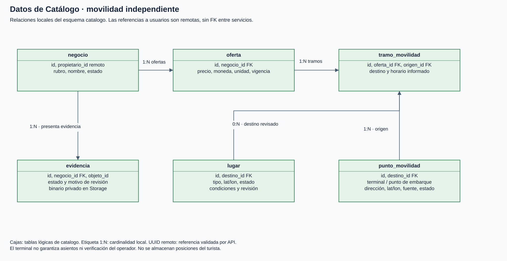
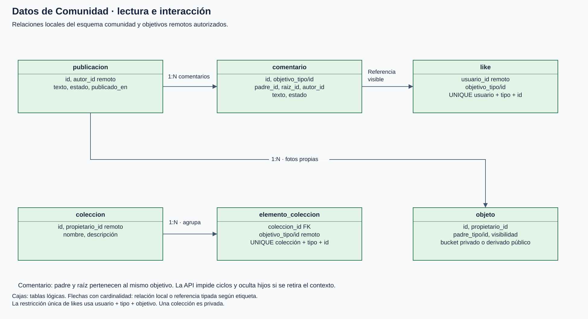
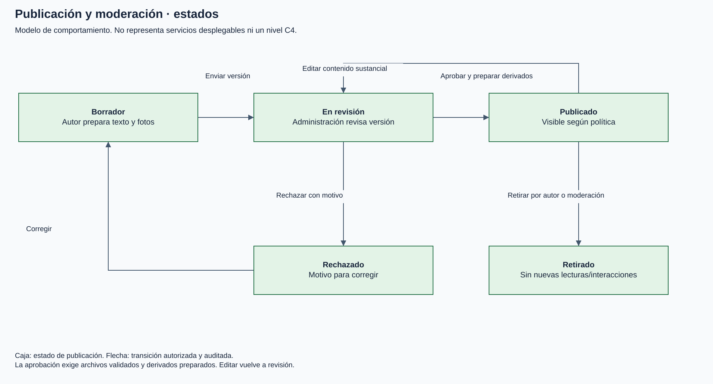
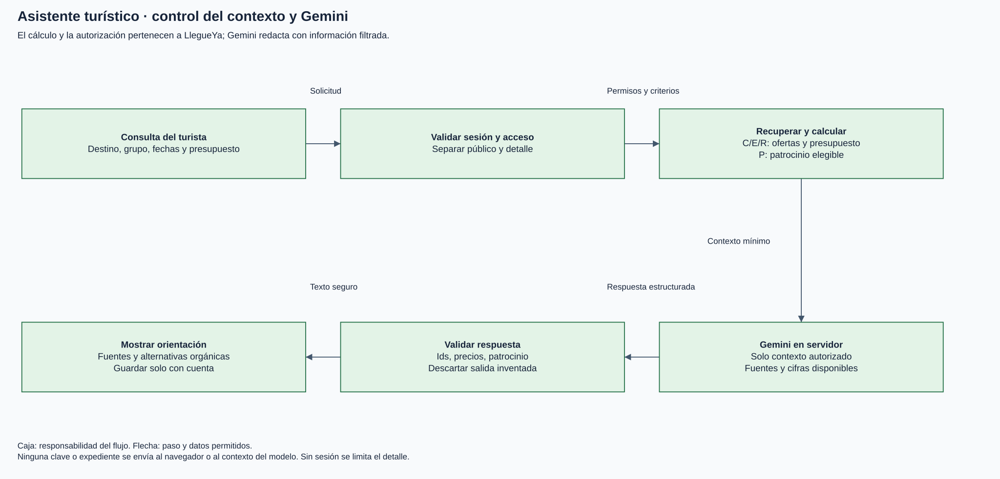

Turismo de Ayacucho · documentación de diseño
Ver diseño de acceso y logo animadoLlegueYa · Descripción del diseño de software
Estado de implementación (29/10/2026): existe una primera capacidad de Identidad con Google y pruebas locales. Consultar estado real y ejecución. Las descripciones de producto y pruebas futuras de esta línea base no acreditan que todos los servicios estén implementados.
SDD 1.0 · Línea base de diseño · 28 de octubre de 2026
Plataforma social de turismo de Ayacucho, centrada en lectura, fotografías y planificación. Este SDD especifica el diseño que orientará la implementación. No acredita una aplicación desplegada, recursos contratados ni pruebas ejecutadas. Los valores operativos propuestos se distinguen de las reglas aprobadas.
Leer el documento con navegación · Índice general de documentación · Modelo C4
Lectura del documento
| Capítulo | Contenido y resultado |
|---|---|
| 01 · Alcance | Límites, actores, términos y reglas que gobiernan el diseño. |
| 02 · Arquitectura y decisiones | Servicios, tecnologías, alternativas, Supabase y relación con C4. |
| 03 · Servicios, capas y SOLID | Componentes, contratos interiores, responsabilidades y dependencias. |
| 04 · Datos y Supabase | Diccionario lógico, relaciones, invariantes, esquemas, archivos y acceso. |
| 05 · Contratos e integraciones | Operaciones API, DTO, errores, mensajes, Gemini y mapa. |
| 06 · Flujos y estados | Secuencias, estados y comportamiento ante concurrencia o fallos. |
| 07 · Interfaz y experiencia | Navegación, lectura, perfil, muro, mapa y criterios de interacción. |
| 08 · Seguridad | Autenticación, permisos, privacidad, secretos y revisión previa al commit. |
| 09 · Despliegue y operación | Docker, Cloudflare, datos gestionados, recuperación y observabilidad. |
| 10 · Trazabilidad y validación | Cobertura de requisitos, escenarios de aceptación, riesgos y pendientes. |
| 11 · Pruebas y calidad | Integración, seguridad, E2E, calidad y puertas de cobertura mínima del 90 %. |
| Referencias | Fuentes primarias y criterios metodológicos aplicados. |
Control documental
| Campo | Valor |
|---|---|
| Sistema | LlegueYa. |
| Equipo | Cristian Mier Llallahui Gomez y Yordi Ajeo Atao Huaman. |
| Curso | Arquitectura de Software, IS-488, UNSCH. |
| Línea base funcional | RF01–RF65 y HU01–HU46. |
| Diseño aprobado por alcance | Supabase, Docker, Cloudflare, Gemini; mapa interactivo sin geolocalización. |
| Diseño propuesto por el equipo | Python/FastAPI, frontend HTML/CSS/JavaScript, Leaflet y mensajería RabbitMQ. |
| Pendientes de ejecución | Implementar, fijar versiones exactas tras compatibilidad, contratar alojamiento y ejecutar validaciones. |
| Control de cambios | Git conserva el historial. Este documento no contiene secretos y no requiere cuentas reales para leerlo. |
Propiedad de la información
Los requisitos pertenecen al análisis y a la especificación funcional; las decisiones generales al registro ADR; los diagramas C4 a modelo-c4/. Este SDD es la fuente del diseño detallado de datos, contratos, estados e interfaz. El resumen de tecnología enlaza al capítulo 02. Los gráficos derivados y el lector HTML se generan desde las fuentes de documentación, sin duplicar decisiones editables.
La estructura se inspira en descripción de diseño y vistas de arquitectura, adaptadas al curso. No se afirma certificación formal IEEE. La matriz metodológica explica su correspondencia.
Convención: «debe» identifica una obligación del diseño; «propuesto» identifica un valor que requiere validación; «pendiente» marca una decisión externa o una tarea aún no ejecutada. Los ejemplos usan identificadores ficticios. No hay código de aplicación en esta entrega.
01 · Alcance y reglas del diseño
Índice · Siguiente: arquitectura
1.1 Propósito y lectores
El SDD traduce requisitos y decisiones de LlegueYa en responsabilidades, datos, contratos y comportamiento verificable. Sirve al equipo de desarrollo, responsable de operación, administrador del producto y docente. Los requisitos funcionales completos permanecen en RF01–RF65; no se renumeran los requisitos previos.
LlegueYa permite descubrir Ayacucho, leer experiencias, comparar servicios y planificar tanto un viaje independiente como uno basado en paquetes comerciales. El modelo de publicidad ayuda a difundir negocios elegibles y se presenta separado de opiniones y categorías acreditadas.
1.2 Capacidades incluidas
| Capacidad | Diseño previsto |
|---|---|
| Descubrimiento | Tarjetas públicas, búsqueda por destino/rubro y fichas completas con sesión. |
| Catálogo | Lugares, camping, actividades, hospedajes, restaurantes, artesanos y movilidad. |
| Comunidad | Experiencias, fotografías, reseñas, comentarios con fotos, respuestas, likes y reportes. |
| Perfil | Nombre visible, biografía, avatar, intereses y preferencias editables por el titular. |
| Lectura personal | Favoritos y colecciones privadas para guardar lugares y experiencias. |
| Movilidad independiente | Terminales y puntos de embarque, operadores y ofertas de traslado, sin obligación de comprar paquete. |
| Mapa | Arrastre, zoom, marcadores y selección de fichas. Coordenadas del catálogo revisadas. |
| Calendario | Eventos por mes/año/destino, propuestas y aprobación administrativa. |
| Publicidad | Un mes calendario gratuito inicial por defecto, configurable; planes y pagos externos revisados. |
| Asistente | Gemini con contexto autorizado, planificación estructurada y patrocinio identificado. |
| Operación | Siete servicios por negocio, Supabase, Docker y Cloudflare. |
1.3 Actores y visibilidad
Turista y visitante son el mismo actor. Sin sesión puede leer vistas previas, mapa con datos públicos y orientación general. Con sesión accede al detalle, galería completa, contacto, planificación, publicaciones e interacción. Proveedor es una cuenta con permisos sobre negocios propios; Administrador es un rol controlado que no puede autoconcederse al editar el perfil.
La portada del mapa no debe revelar direcciones privadas, números de contacto o campos restringidos. Los marcadores públicos muestran la posición pública aprobada de lugares o negocios abiertos al público y un resumen. La ficha detallada y los datos de contacto siguen exigiendo sesión. Las alertas de cancelación y la etiqueta «Patrocinado» permanecen visibles en la vista previa.
1.4 Reglas estables
- Un registro no concede acceso a expedientes, pagos o conversaciones de otros usuarios.
- Solo contenido aprobado participa en muro, catálogo, calendario o contexto del bot. Una edición sustancial vuelve a revisión; la versión modificada no reemplaza silenciosamente lo aprobado.
- Likes y respuestas requieren sesión, objetivo visible y unicidad por usuario/objetivo. Una respuesta conserva raíz y padre; no se permite moverla de hilo.
- La acreditación de estrellas o tenedores requiere evidencia y no se deriva de likes, reseñas o pago.
- Publicidad valida anunciante, objetivo, vigencia, compatibilidad, beneficio/pago, cuota y frecuencia. Los planes no garantizan ventas o audiencia inexistente.
- La gratuidad es única por negocio; empieza con la primera activación aprobada. Un mes se calcula como mes calendario en America/Lima, no treinta días.
- El presupuesto se calcula con precios estructurados y moneda/unidad explícitas antes de solicitar texto a Gemini. Un precio ausente se comunica, no se completa por inferencia.
- El mapa no usa GPS,
navigator.geolocation, ubicación en segundo plano ni permisos de localización. No hay geocodificación ni cálculo de rutas en esta línea base.
1.5 Límites
No se implementan reservas, compra de entradas/pasajes, cobros a turistas, seguimiento de vehículos, navegación GPS, mensajería privada, video, WhatsApp o Telegram. Los contactos y enlaces externos verificados permiten continuar fuera de LlegueYa. El pago de publicidad ocurre fuera y administración revisa el comprobante.
La experiencia se inspira en lectura y fotografía de redes sociales, sin reproducir su infraestructura o prometer su escala. Se priorizan legibilidad, relevancia, control de avisos y navegación predecible. La retención de usuarios se evalúa por utilidad y facilidad, sin obligar a desplazamiento infinito o notificaciones invasivas.
1.6 Glosario de dominio
| Término | Significado |
|---|---|
| Destino | Zona de Ayacucho que agrupa lugares y actividades. |
| Oferta | Servicio comercial de un negocio, con precio/unidad/vigencia cuando se conocen. |
| Paquete comercial | Oferta agrupada de un proveedor. |
| Propuesta de viaje | Combinación estimada calculada para un usuario; no representa reserva. |
| Punto de movilidad | Terminal o lugar de embarque aprobado, vinculado a operadores y destinos atendidos. |
| Esquema de datos | Espacio de nombres y permisos dentro de PostgreSQL; no servidor ni base físicamente separada. |
| Patrocinio | Exposición comercial identificada y condicionada a elegibilidad. |
| Evidencia | Documento privado de verificación o pago, distinto de una foto pública. |
02 · Arquitectura y decisiones técnicas
2.1 Estilo global y organización interna
El estilo es distribuido orientado a servicios de negocio. Identidad (I), Catálogo (C), Comunidad (M), Eventos (E), Publicidad (P), Recomendaciones (R) y Asistente (A) son aplicaciones desplegables independientes. Cada una organiza su interior por capas con Clean Architecture. La distribución añade comunicación por red y fallos parciales; las capas controlan dependencias de código. SOLID guía el diseño de componentes y contratos, no obliga a crear servicios nuevos.
C1 fija contexto, C2 identifica aplicaciones y datos, C3 amplía Publicidad, y C4 detalla Selección de anuncios. El despliegue es una vista complementaria. Esas vistas siguen siendo su ubicación principal.
2.2 Tecnologías y límites de la decisión
| Recurso | Elección de diseño | Justificación y condición |
|---|---|---|
| Frontend WEB | HTML semántico, CSS y JavaScript modular de navegador. | Interfaz centrada en lectura, sin servidor Node.js. Reutilización mediante componentes de interfaz. Framework adicional fuera de esta línea base. |
| APIs I–A | Python/FastAPI, propuesta técnica del SDD. | Contratos tipados y puertos/adaptadores. No se incorporan PHP o Node.js como backend. |
| Datos | Supabase gestionado sobre PostgreSQL. | Servicio elegido para datos, con siete esquemas de negocio y cuentas técnicas separadas. |
| Identidad técnica | Supabase Auth, detrás del servicio Identidad. | Autenticación y recuperación gestionadas; roles y perfil de negocio pertenecen a I. |
| Archivos | Supabase Storage, mediante adaptadores de cada dueño. | Buckets privados para originales, galería y evidencia; derivados públicos separados. |
| IA | Gemini API desde A. | Proveedor solicitado. Modelo concreto configurable y seleccionado mediante evaluación, sin fijar un nombre comercial no validado. |
| Mapa | Leaflet y cartografía basada en OpenStreetMap. | Biblioteca libre para arrastre, zoom y marcadores. Proveedor de teselas intercambiable. |
| Borde | Cloudflare DNS/proxy HTTPS, CDN y reglas de protección disponibles en el plan elegido. | Acelera recursos públicos y filtra tráfico. No reemplaza permisos de aplicación. |
| Entrada/origen | Nginx, propuesta técnica. | Sirve WEB y enruta APIs en un origen lógico. No contiene reglas de negocio. |
| Mensajería | RabbitMQ, propuesta técnica. | Entrega durable de cambios con outbox/inbox de aplicación. No reemplaza bases ni ejecuta reglas publicitarias. |
| Ejecución | Docker y Docker Compose. | Entornos reproducibles y servicios separados. Versiones exactas/digests se fijarán tras prueba de compatibilidad antes de implementar. |
La selección no implica gratuidad de toda la solución. Supabase, Gemini, Cloudflare y alojamiento tienen límites y condiciones que se evaluarán sin inventar precios ni garantías. Se usan fuentes oficiales en referencias.
2.3 Una base gestionada y siete esquemas
La línea base utiliza un proyecto Supabase, una base PostgreSQL y siete esquemas privados: identidad, catalogo, comunidad, eventos, publicidad, recomendaciones y asistente. Los identificadores previos DI–DA representan ahora particiones de propiedad, no siete contenedores de base distintos. En C2 el contenedor de datos DB describe PostgreSQL gestionado y sus esquemas. Auth y Storage tienen componentes gestionados propios.
Cada servicio usa un rol técnico de ejecución limitado a su esquema; el rol de migración es distinto. No hay joins, claves foráneas, triggers de negocio ni transacciones entre esquemas de servicios. Las referencias remotas se validan por contratos API. La infraestructura administrada de Supabase puede tener sus propios esquemas y relaciones, sin convertirlos en tablas de negocio compartidas.
La base compartida reduce operación inicial y permite transacciones por dominio, pero comparte disponibilidad, conexiones y recursos. No constituye aislamiento físico ni un microservicio plenamente autónomo de persistencia. Si la operación exige independencia física, se evaluarán proyectos/bases separados con migración por servicio. Se conserva esa posibilidad mediante puertos y contratos; no se promete que la migración sea gratuita o automática.
2.4 Mapa sin geolocalización
WEB carga la biblioteca Leaflet empaquetada como activo estático y solicita teselas al proveedor configurado. C devuelve marcadores con coordenadas revisadas; la base no calcula dónde está el turista. El centro inicial es el destino elegido o la vista regional de Ayacucho. El viewport del mapa solo indica la región explorada, no la ubicación del usuario.
Para el piloto de bajo volumen se contempla tile.openstreetmap.org, sujeto a su política: atribución visible, Referer válido, respeto de caché y ausencia de descarga masiva o precarga offline. Es un servicio de mejor esfuerzo, con capacidad limitada y sin SLA; no se presenta como alojamiento gratuito ilimitado. El proveedor se configura y puede cambiar sin alterar los marcadores ni el dominio. Una salida pública con mayor tráfico exige revisar política y seleccionar proveedor adecuado antes de liberar.
No se añaden Google Maps, geocodificación, Places o Routes. Si las teselas fallan, siguen disponibles las tarjetas y ubicación textual. El servicio de mapas no participa en aprobación de proveedores ni publicidad.
2.5 Comunicación y degradación
Las consultas usan HTTPS/JSON y autorización. C, M, E y P publican cambios versionados mediante outbox local. E, P, R y A consumen con inbox y proyecciones propias. El broker no es una autorización: P revalida Catálogo/Eventos antes de entregar publicidad. Los límites de tiempo evitan esperas indefinidas. Si Gemini falla, A devuelve orientación estructurada disponible; si P falla, se omiten anuncios. Una caída de I impide nuevas operaciones autenticadas que no puedan validar el estado de cuenta; las vistas públicas independientes continúan.
2.6 Registro y alternativas
ADR-023 documenta Supabase y el aislamiento por esquemas, ADR-024 Docker/Cloudflare, ADR-025 Gemini, ADR-026 el mapa y ADR-027 perfil/lectura/movilidad en el registro general. PostgreSQL propio aumenta operación; una base NoSQL no aporta una necesidad demostrada para reglas relacionales. Un monolito reduce complejidad operativa, pero no es la distribución elegida. Siete proyectos Supabase aumentarían aislamiento y carga de gestión; se difieren hasta demostrar necesidad.
Los modelos de datos, permisos y APIs aquí descritos no dependen de que Gemini, Maps o el proveedor del borde se conviertan en lógica de dominio. Cada integración se encapsula en un adaptador.
03 · Diseño de servicios, capas y SOLID
3.1 Componentes por capacidad
| Servicio | Componentes de aplicación | Puertos necesarios | Adaptadores e información propia |
|---|---|---|---|
| I · Identidad | Sesión, Perfil, Preferencias y Autorización. | Autenticador, RepositorioPerfil, ConsultaPermisos, AlmacenAvatar. | Cliente Supabase Auth, SQL identidad, Storage de avatar. |
| C · Catálogo | Consulta de tarjetas/fichas, Gestión de ofertas, Revisión, Categorías, Movilidad y Favoritos. | ConsultaCatalogo, RepositorioCatalogo, AlmacenEvidencia, AlmacenGalerias, PublicadorEventos. | SQL catalogo, Storage, proyección GeoJSON de coordenadas propias. |
| M · Comunidad | Publicaciones, Hilos, Likes, Reseñas, Reportes, Moderación y Colecciones de lectura. | RepositorioContenido, ConsultaObjetivoVisible, AlmacenAdjuntos, PublicadorEventos. | SQL comunidad, clientes C/E, Storage. |
| E · Eventos | Propuestas y revisión, Calendario, Suscripciones, Bandeja y Ejecutor de recordatorios. | RepositorioEventos, Reloj, Notificador, PublicadorEventos. | SQL eventos, Storage, broker y correo opcional. |
| P · Publicidad | Gestión comercial, Selección de anuncios, Métricas e Integración/vencimientos. | RepositorioCampanias, ConsultaElegibilidad, AlmacenComprobantes, Reloj. | SQL publicidad, clientes C/E, Storage y broker. |
| R · Recomendaciones | Compatibilidad, Cálculo de presupuesto y Viajes guardados. | ConsultaOfertas, ConsultaPatrocinio, RepositorioViajes. | SQL recomendaciones, API C y P. |
| A · Asistente | Sesión conversacional, Recuperación autorizada, Orquestación y Validación de respuesta. | GeneradorRespuesta, ConsultaGuia, ConsultaRecomendaciones, RepositorioConversaciones. | SQL asistente, Gemini, API C/E/R/P. |
Los controladores y adaptadores son componentes internos; no crean nuevos microservicios por cada entidad. Las tareas persistidas viven dentro de E y P y coordinan réplicas. No se agregan chat privado ni servicio de seguimiento vehicular.
3.2 Organización por capas
| Capa | Contenido | Dependencias permitidas | Prohibiciones |
|---|---|---|---|
| Dominio | Entidades, objetos de valor, estados y reglas. | Su propio dominio. | SQL, HTTP, SDK de Supabase/Gemini, framework web. |
| Aplicación | Casos de uso, autorización contextual y puertos. | Dominio y contratos internos. | Importar adaptadores concretos o leer tablas de otros servicios. |
| Presentación | Controladores, DTO de entrada/salida y traducción de errores. | Aplicación. | Decidir elegibilidad comercial o ejecutar SQL. |
| Infraestructura | Repositorios SQL, clientes HTTP, archivos y mensajes. | Puertos de Aplicación/Dominio que implementa. | Redefinir reglas de gratuidad o presupuesto. |
| Composición | Ensamblaje de adaptadores, configuración y ciclo de vida. | Capas que conecta. | Acumular reglas del negocio. |
La futura estructura de un servicio separará dominio/, aplicacion/, presentacion/, infraestructura/ y composicion/. Es una convención de diseño, no carpetas de aplicación creadas en esta entrega. El gráfico de Clean Architecture muestra la dirección de dependencias.

3.3 SOLID aplicado y comprobable
| Principio | Decisión concreta | Comprobación de diseño/implementación futura |
|---|---|---|
| S · Responsabilidad única | PublicarExperiencia coordina publicación; ValidadorImagen valida binarios; ModerarContenido decide visibilidad; repositorio persiste. | Cambiar tamaño de imagen no exige editar selección publicitaria. El controlador no contiene SQL. |
| O · Abierto/cerrado | ProveedorTeselas y GeneradorRespuesta tienen adaptadores configurables; estrategias de rotación publicitaria respetan una interfaz. | Sustituir Gemini por un doble de pruebas no cambia los casos de uso ni criterios de presupuesto. |
| L · Sustitución | SQL y repositorio de prueba conservan ausencia, errores de concurrencia y unicidad; proveedores IA devuelven un resultado validable o un error tipado. | La misma batería de contratos se aplica a cada adaptador. No se considera sustitución válida cambiar una ausencia por un anuncio inventado. |
| I · Segregación de interfaces | ConsultaCatalogoPublico no permite moderar; ConsultaElegibilidad no permite cambiar tarifas; AlmacenComprobantes no expone galerías públicas. | Cada consumidor recibe operaciones mínimas. Ninguna API pública devuelve documentos por reutilizar un DTO administrativo. |
| D · Inversión de dependencias | RecomendarViaje depende de ConsultaOfertas; ResponderConsulta de GeneradorRespuesta; los SDK se conectan en composición. | Regla verificable de imports: Dominio/Aplicación no importan SDK, ORM, HTTP ni módulos de Infraestructura. |
SOLID no requiere una interfaz por clase ni herencias innecesarias. Cada abstracción responde a una dependencia intercambiable o a una separación de permisos identificada.
3.4 Contratos interiores representativos
| Puerto | Entrada | Salida/errores | Obligación |
|---|---|---|---|
| ConsultaObjetivoVisible | Usuario validado, tipo, id y operación. | Estado/visibilidad, no disponible o dependencia no verificable. | No confundir conocer un id con tener acceso. |
| RepositorioCampanias | Criterios, instante y clave de solicitud. | Candidatas / reserva atómica / conflicto. | Conservar cuota, deduplicación y condiciones copiadas. |
| GeneradorRespuesta | Pregunta, contexto filtrado e instrucciones del sistema. | Respuesta estructurada o error tipado. | No entregar autoridad de aprobación ni acceder a secretos. |
| ProveedorTeselas | Plantilla URL y atribución de configuración. | Capa visual del mapa. | No solicitar GPS ni ocultar atribución. |
| Reloj | Ninguna entrada de negocio. | Instante UTC. | Permitir pruebas deterministas de fechas y vencimiento. |
| PublicadorEventos | Evento de outbox y versión. | Confirmación técnica o error reintentable. | No borrar outbox antes de confirmación. |
3.5 Concurrencia y consistencia
Se usa bloqueo optimista version para ediciones y revisiones. Una edición con versión antigua devuelve conflicto y no pisa otra decisión. La unicidad de likes/beneficio y la reserva de cuota se refuerzan en PostgreSQL. Retirar un padre conserva auditoría y oculta descendientes en consulta, incluso si una proyección aún no se actualiza.
Cada servicio confirma cambios y outbox en su transacción. Los consumidores mantienen inbox local; un duplicado devuelve éxito técnico sin repetir efectos. Se prevén reintentos acotados y cola de fallos. Los contratos externos se versionan; ningún consumidor realiza migraciones de tablas ajenas.
3.6 Secuencia de dependencias del asistente
El usuario aporta destino, fechas, grupo y presupuesto. A valida sesión cuando el pedido necesita detalle; consulta C/E/R y solicita a P solo candidatos compatibles. R realiza aritmética decimal y conserva fuente/precio/unidad. A envía a Gemini un contexto mínimo con identificadores de fuente. La respuesta se valida y se renderiza como texto seguro. El modelo no ejecuta SQL, fija tarifas, aprueba publicaciones ni genera URLs firmadas.
04 · Modelo de datos y Supabase


4.1 Convenciones y propiedad
Una base PostgreSQL gestionada por Supabase contiene siete esquemas privados de negocio. Se usan UUID para identificadores; timestamptz para instantes UTC; date para fecha civil; importes numeric(12,2) y moneda ISO; coordenadas WGS84 numeric(9,6); estados con valores cerrados; version bigint para concurrencia. Una referencia usuario_id o negocio_id remota es un UUID sin FK entre esquemas. Dentro del mismo esquema se usan FK y restricciones locales. Los campos enumerados constituyen el diccionario lógico inicial; longitudes y validaciones de entrada están en contratos.
En tablas mutables: id, creado_en, actualizado_en, version y, cuando corresponda, retirado_en. Los identificadores de auditoría y autoría son inmutables. No se elimina una evidencia de auditoría al retirar contenido público; se aplican retenciones por clase de dato.
4.2 Diccionario por servicio
| Esquema / tabla lógica | Campos de dominio y tipos | Relaciones y restricciones |
|---|---|---|
| identidad.perfil | usuario_id UUID PK, nombre_visible varchar(80), biografia varchar(300), avatar_id UUID nullable, estado enum | usuario_id coincide con el sujeto de Auth, sin copiar contraseña ni token; estado activo/suspendido/cerrado. |
| identidad.asignacion_rol | usuario_id UUID, rol enum, otorgado_por UUID, otorgado_en timestamp | PK usuario_id+rol; solo operación administrativa asigna proveedor/administrador. |
| identidad.preferencia | usuario_id UUID, idioma varchar(10), intereses JSONB, perfil_visible bool | Una por usuario; intereses usa ids de categorías/destinos, nunca GPS. |
| identidad.sesion_refresh | id UUID, usuario_id UUID, secreto_cifrado text, vence_en timestamp, revocada_en nullable | Refresh gestionado solo por I; referencia opaca en cookie y cifrado con clave externa. No se guarda access token en logs. |
| catalogo.destino | nombre varchar(120), descripcion text, estado enum | Nombre y zona normalizados para revisión de duplicados. |
| catalogo.lugar | destino_id UUID FK, tipo enum, nombre, descripcion, lat, lon, estado, fuente_url nullable, revisado_en | Latitud [-90,90], longitud [-180,180]; publicado requiere revisión. Camping guarda condiciones confirmadas y desconocidas. |
| catalogo.negocio | propietario_id UUID remoto, rubro enum, nombre, estado, contacto JSONB privado | Titular validado en I; revisión de requisitos por rubro, no identidad por nombre comercial únicamente. |
| catalogo.oferta | negocio_id UUID FK, tipo enum, descripcion, precio nullable, moneda, unidad, vigencia_inicio/fin | Importe no negativo y unidad explícita: persona/noche/tramo/grupo/paquete. Precio desconocido es NULL, no cero. |
| catalogo.categoria_acreditada | negocio_id FK, clase, categoria, autoridad, evidencia_id FK, estado, revisado_en, vigente_hasta nullable | Estrellas y tenedores solo con estado verificado y evidencia. No se calcula con reseñas. |
| catalogo.requisito_rubro | rubro, nombre, obligatorio bool, version_politica | Reglas configuradas por administrador; no autoaprobar negocio por cargar archivo. |
| catalogo.evidencia | negocio_id FK, requisito_id FK nullable, objeto_id FK, estado, motivo_revision | Binario privado, revisado por administración; permisos del propietario para sus expedientes. |
| catalogo.punto_movilidad | destino_id FK, lugar_id FK nullable, tipo enum, nombre, direccion_publica, lat, lon, fuente, revisado_en, estado | Tipos terminal/punto_embarque; sin posición de turista, vehículo ni tracking. |
| catalogo.tramo_movilidad | oferta_id FK, origen_id FK punto_movilidad, destino_lugar_id FK nullable, destino_texto, horario_texto, verificado_en | Destino existente o descripción confirmada; capacidad/horario son informados, no disponibilidad en tiempo real. |
| catalogo.propuesta_lugar | autor_id remoto, datos JSONB, estado, revisor_id nullable, motivo | Conserva datos aportados y revisión; aprobación crea o actualiza lugar en transacción local. |
| catalogo.favorito | usuario_id remoto, objetivo_tipo, objetivo_id | Unique(usuario_id,tipo,id); objetivo de Catálogo existente y visible. |
| comunidad.publicacion | autor_id remoto, destino_id remoto nullable, objetivo_tipo/id nullable, texto, estado, publicado_en nullable | Texto o foto vinculada; edición sustancial vuelve a revisión. Feed ordena publicado_en+id. |
| comunidad.comentario | autor_id remoto, objetivo_tipo/id, padre_id FK nullable, raiz_id FK nullable, texto, estado | Padre y raíz del mismo hilo y objetivo; profundidad propuesta máxima 5, paginación de hijos. |
| comunidad.like | usuario_id remoto, objetivo_tipo enum, objetivo_id UUID | Unique(usuario_id,tipo,id); foto/comentario/respuesta aprobados. No FK a tablas remotas. |
| comunidad.resena | usuario_id remoto, negocio_id remoto, puntuacion smallint, texto, estado | Puntuación 1–5; una reseña activa por usuario/negocio, editable con revisión. No cambia categoría oficial. |
| comunidad.reporte | autor_id remoto, objetivo_tipo/id, motivo, estado, decision_administrativa | Reportar no garantiza retiro automático; evita exponer identidad del reportante a denunciado. |
| comunidad.contenido_cultural | tipo enum, titulo, cuerpo/referencia, autor_fuente, destino_id remoto, estado | Historia/fotografía/libro con derechos o referencia autorizada; no copiar obras sin permiso. |
| comunidad.coleccion | propietario_id remoto, nombre varchar(80), descripcion nullable | Privada en la línea base. |
| comunidad.elemento_coleccion | coleccion_id FK, objetivo_tipo/id remoto, agregado_en | Unique(coleccion_id,tipo,id); valida acceso vigente al consultar. Guardar no copia contenido retirado. |
| eventos.propuesta | autor_id remoto, organizador, lugar_id remoto, inicio/fin, zona_horaria, fuente, estado, motivo | Inicio < fin; aprobación administrativa antes de calendario. |
| eventos.evento | propuesta_id FK nullable, titulo, lugar_id remoto, inicio/fin, zona, estado, version_publica, organizador | Ocurrencias por año; no inferir recurrencias cambiantes. |
| eventos.suscripcion | usuario_id remoto, tipo_objetivo, objetivo_id, recordatorio_config JSONB, activa bool | Unique(usuario_id,tipo,id); permite desactivar avisos futuros. |
| eventos.tarea_recordatorio | usuario_id, objetivo_tipo/id, version_objetivo, ejecutar_en, estado, lease_hasta nullable | Clave única de usuario+objetivo+tipo+versión; ejecutores coordinados por lease. |
| eventos.notificacion | usuario_id, tipo, objetivo_tipo/id, version_objetivo, texto_resumen, leida_en nullable | Una notificación lógica por clave; detalle protegido como el recurso original. |
| eventos.entrega | notificacion_id FK, canal, intento, estado, error_tipado nullable | Intentos separados del aviso lógico; sin duplicar bandeja por reintento. |
| publicidad.politica_gratuita | version_politica, habilitada, duracion, unidad, condiciones JSONB, aplica_desde | Duración positiva y cambios versionados. |
| publicidad.beneficio | negocio_id remoto UNIQUE, politica_version, condiciones_copiadas JSONB, inicio/fin, estado | Un beneficio inicial por negocio, con fin exacto y zona aplicada. |
| publicidad.plan | nombre, tarifa, moneda, duracion, cuota, frecuencia, peso_rotacion, activo | Valores comerciales definidos por administración; no precios inventados en el SDD. |
| publicidad.contratacion | negocio_id, plan_id FK, condiciones_copiadas JSONB, inicio/fin, estado | Congela tarifa/cuotas; cambio del plan no altera contrato anterior. |
| publicidad.pago | contratacion_id FK, referencia_normalizada UNIQUE, monto, moneda, objeto_id FK, estado, revisor_id, motivo | Pendiente/confirmado/rechazado; evidencia privada y auditoría de revisión. |
| publicidad.campania | negocio_id remoto, objetivo_tipo/id remoto, beneficio_id FK nullable, contratacion_id FK nullable, estado, inicio/fin, creatividad_version | Fuente gratuita o pagada identificada y consistente. Requiere elegibilidad actual del objetivo. |
| publicidad.reserva_cuota | campania_id FK, solicitud_id UUID, usuario_medicion nullable, ventana_frecuencia, vence_en, estado | Unique(campania_id,solicitud_id); reserva atómica y contabilización separada de impresión. |
| publicidad.medicion | entrega_id UUID, campania_id FK, canal, evento_tipo, sujeto_seudonimo nullable, instante | Unique(entrega_id,evento_tipo); solicitud/entrega/impresión/clic separados; métricas agregadas al proveedor. |
| recomendaciones.viaje | propietario_id remoto, criterios JSONB, desglose JSONB, total_estimado, moneda, generado_en | No equivale a reserva; precio conserva fuente y vigencia. |
| recomendaciones.proyeccion_oferta | oferta_id remoto UNIQUE, version_fuente, resumen JSONB, actualizada_en | Solo lectura derivada; no autoriza anuncio ni reemplaza validación de fuente. |
| asistente.conversacion | propietario_id remoto, titulo, estado, creada_en, vence_retencion | Historial únicamente de cuentas; consulta pública sin persistencia personal. |
| asistente.mensaje | conversacion_id FK, rol enum, texto, fuentes JSONB, modelo, creado_en | Texto saneado y sin tokens. No almacena expedientes como contexto. |
| asistente.documento_conocimiento | fuente_tipo/id, version_fuente, visibilidad, contenido_reducido, estado | Solo fuente aprobada. Recuperación inicial por filtros y búsqueda textual; embeddings adicionales requieren decisión. |
4.3 Tablas técnicas locales
Los esquemas productores C/M/E/P incluyen outbox(id, tipo, aggregate_id, aggregate_version, schema_version, payload, ocurrido_en, publicado_en, intentos). Los consumidores C/M/E/P/R/A incluyen inbox(evento_id PK, recibido_en, procesado_en) y estado de proyección. Cada servicio conserva auditoria(id, actor_id, accion, objetivo_id, campos_afectados, motivo, instante, request_id) sin contraseñas, tokens o binarios.
C/M/E/P y el avatar de I conservan objeto(id, propietario_id, bucket, clave_aleatoria, mime_validado, bytes, hash_integridad, estado, visibilidad, padre_tipo/id). Un objeto pertenece a un único padre/servicio. Un hash verifica integridad; no sustituye derechos de autor ni moderación. Los nombres originales no se usan como rutas públicas.
4.4 Relaciones de referencia
Ver fuente editable Mermaid del diagrama
erDiagram
CATALOGO_NEGOCIO ||--o{ CATALOGO_OFERTA : posee
CATALOGO_NEGOCIO ||--o{ CATALOGO_EVIDENCIA : presenta
CATALOGO_OFERTA ||--o{ CATALOGO_TRAMO : describe
CATALOGO_PUNTO_MOVILIDAD ||--o{ CATALOGO_TRAMO : origen
COMUNIDAD_PUBLICACION ||--o{ COMUNIDAD_OBJETO : adjunta
COMUNIDAD_COMENTARIO o|--o{ COMUNIDAD_COMENTARIO : padre
COMUNIDAD_COLECCION ||--o{ COMUNIDAD_ELEMENTO : agrupa
EVENTOS_EVENTO ||--o{ EVENTOS_TAREA : referencia
EVENTOS_NOTIFICACION ||--o{ EVENTOS_ENTREGA : registra
PUBLICIDAD_PLAN ||--o{ PUBLICIDAD_CONTRATACION : origina
PUBLICIDAD_CONTRATACION ||--o{ PUBLICIDAD_PAGO : recibe
PUBLICIDAD_BENEFICIO o|--o{ PUBLICIDAD_CAMPANIA : financia
PUBLICIDAD_CONTRATACION o|--o{ PUBLICIDAD_CAMPANIA : financia
PUBLICIDAD_CAMPANIA ||--o{ PUBLICIDAD_RESERVA : limita
ASISTENTE_CONVERSACION ||--o{ ASISTENTE_MENSAJE : contiene
Los prefijos indican el esquema propietario. El gráfico muestra relaciones locales representativas. Las referencias entre dominios son ids remotos y no se dibujan como claves foráneas. El diccionario es la definición lógica. La línea base DDL está en supabase/migrations, con 64 tablas; su aplicación remota se verifica por separado.
4.5 Acceso a PostgreSQL y RLS
Los esquemas de negocio no se exponen a la Data API pública de Supabase en esta línea base. El navegador usa las APIs de LlegueYa. Los roles svc_identidad, svc_catalogo, etc., tienen USAGE y permisos mínimos exclusivamente en su esquema y no son propietarios, superusuarios ni BYPASSRLS. El rol de migración es distinto y no se usa para tráfico normal.
Las APIs validan JWT y permisos; para tablas personales con RLS, establecen contexto de usuario validado a nivel transacción, nunca desde campos enviados por el cliente. El contexto se limpia al devolver conexiones al pool. Las políticas verifican propietario/estado; las tareas internas utilizan un rol específico y alcance explícito. Se probarán accesos con todos los roles y con contexto ausente. RLS no reemplaza autorización de negocio ni protege automáticamente a un rol que pueda omitirla.
4.6 Archivos y ciclo de vida
| Clase | Almacenamiento y entrega |
|---|---|
| Original pendiente | Bucket privado, solo autor autorizado y moderación. |
| Portada/miniatura aprobada | Derivado sin metadatos sensibles; puede distribuirse públicamente con clave versionada. |
| Galería completa | Bucket privado; entrega mediante servicio dueño tras validar sesión y visibilidad. |
| Categoría/comprobante | Bucket privado separado; propietario y administrador según propósito, nunca CDN pública. |
| Avatar | Original privado; derivado aprobado público solo si el perfil es visible. |
La carga usa autorización temporal para una clave concreta, validación de contenido real, tamaño y vínculo al padre. El cliente no decide bucket ni ruta libremente. La aprobación genera derivados, elimina EXIF sensible y confirma publicación. La retirada revoca accesos futuros y elimina o invalida derivados públicos. La galería privada se sirve por la API autorizada para permitir revocación al confirmar; una URL firmada ya emitida, si se adopta posteriormente, conserva validez hasta su expiración y exige documentar ese límite.
4.7 Índices, retención y migración
Índices iniciales: publicación (estado, publicado_en DESC, id DESC); comentario (objetivo_tipo,objetivo_id,raiz_id,creado_en,id); evento (estado,inicio,lugar_id); lugar (estado,destino_id,tipo) y coordenadas según consulta de viewport; oferta (negocio_id,estado); tarea (estado,ejecutar_en); campaña (estado,inicio,fin); outbox pendientes e inbox PK. Se añade búsqueda textual solo sobre campos públicos o autorizados, nunca mezclando expedientes en un índice público.
Retenciones propuestas para validación: cargas huérfanas 24 horas, historial conversacional 90 días configurable por titular, logs operativos 30 días con datos mínimos, reservas de cuota expiradas conciliadas y medición seudónima 90 días antes de agregado. Evidencia administrativa conserva la retención que defina el propietario conforme a sus obligaciones; no se inventa un plazo legal. Solicitudes de eliminación coordinan servicios mediante eventos y mantienen solo lo justificado.
Las migraciones son versionadas por servicio y siguen expansión, adaptación y retirada. Cada cambio se prueba con datos ficticios, copia de seguridad y recuperación. Un dump real de producción nunca se incorpora al repositorio.
05 · Contratos de API e integraciones
5.1 Convenciones comunes
Base lógica /api/v1. JSON UTF-8, fechas ISO 8601 con zona, UUID y moneda/unidad explícitas. Las listas devuelven items, next_cursor y has_more; límite propuesto 20, máximo 50. Cursor opaco derivado de fecha/id evita duplicaciones al insertar nuevos elementos. Toda respuesta incluye request_id. Se validan campos permitidos y se rechazan propiedades administrativas en DTO de perfil o publicación.
Autenticación: access JWT en Authorization: Bearer ..., obtenido de I; el token real nunca aparece en ejemplos. I conserva refresh cifrado en el servidor y entrega cookie opaca HttpOnly/Secure/SameSite con ruta de autenticación. El access token se mantiene en memoria de WEB; al recargar se recupera mediante refresh autorizado. No se guarda en URL ni en almacenamiento persistente del navegador. Las operaciones con cookie exigen comprobación de Origin y defensa CSRF.
Las APIs validan firma/issuer/audience/expiración del JWT con la configuración de Auth y comprueban estado/permisos actuales con I para datos autenticados. Una cuenta suspendida no conserva permisos por tener un JWT aún válido. Las llamadas internas transportan identidad validada y credencial de servicio de alcance mínimo. Los endpoints /internal/ no son accesibles desde el proxy público.
5.2 Catálogo de operaciones
Público = vista previa. Titular = sesión y propiedad. Admin = autorización administrativa actual. El servicio dueño realiza la comprobación, aunque GW haya admitido la solicitud.
| Servicio | Método y recurso | Permiso | Entrada/salida y efecto |
|---|---|---|---|
| I | POST /auth/registro, /auth/sesion |
Público con controles de abuso | Datos de cuenta hacia Supabase Auth; no permite rol administrativo. Registro puede requerir confirmación. |
| I | POST /auth/refresh, /auth/salir |
Cookie válida y CSRF | Renueva o revoca sesión; no expone refresh al frontend. |
| I | POST /auth/recuperacion |
Público limitado | Respuesta uniforme para evitar enumerar correos. |
| I | GET/PATCH /perfil |
Titular | Perfil propio; solo nombre, biografía, avatar autorizado e intereses permitidos. |
| I | PATCH /preferencias |
Titular | Idioma y visibilidad; notificaciones se coordinan con E, sin escribir sus tablas. |
| I | GET /internal/contexto |
Servicio autorizado | Cuenta activa y permisos vigentes para el sujeto validado. |
| C | GET /catalogo/tarjetas |
Público | Filtros destino, tipo, categoría y cursor; devuelve solo campos de vista previa. |
| C | GET /catalogo/fichas/{id} |
Sesión | Detalle según tipo, galería autorizada, acceso y contacto. |
| C | GET /catalogo/mapa |
Público | bbox=west,south,east,north, zoom, tipo/destino; GeoJSON limitado de puntos públicos aprobados. |
| C | GET /movilidad/puntos, /movilidad/ofertas |
Público para tarjeta; detalle con sesión | Terminal, embarque y traslados por origen/destino sin exigir paquete. |
| C | POST/PATCH /negocios, /ofertas/{id} |
Proveedor titular | Datos comerciales y evidencia; revisión según estado. |
| C | POST /propuestas/lugares |
Sesión | Datos/fotos de lugar o camping, fuente y condiciones; queda pendiente. |
| C | POST /admin/revisiones/{id} |
Admin | Decisión, motivo y versión; publica o solicita información. |
| C | PUT/DELETE /favoritos/{tipo}/{id} |
Titular | Agrega o retira favorito de forma idempotente. |
| C | GET /internal/elegibilidad/{tipo}/{id} |
Servicio autorizado | Estado actual, anunciante autorizado y versión de fuente. |
| M | GET /comunidad/muro |
Público/resumen o sesión | Publicaciones aprobadas, destino/servicio, orden reciente, cursor. |
| M | GET /comunidad/publicaciones/{id} |
Sesión para detalle | Contenido e hilos visibles sin expedientes. |
| M | POST/PATCH/DELETE /comunidad/publicaciones/{id} |
Titular | Crear, editar con revisión o retirar; POST usa recurso colección sin id. |
| M | GET/POST /comunidad/objetivos/{tipo}/{id}/comentarios |
Sesión | Texto/fotos, padre opcional y raíz; valida acceso del objetivo. |
| M | PUT/DELETE /comunidad/objetivos/{tipo}/{id}/like |
Sesión | Un like activo por sujeto; repetir no duplica ni produce error artificial. |
| M | PUT /comunidad/negocios/{id}/resena |
Sesión | Puntuación y texto propios, con moderación. |
| M | POST /comunidad/reportes |
Sesión | Motivo y objetivo visible; identidad del reportante protegida. |
| M | POST/PATCH /colecciones, /colecciones/{id} |
Titular | Colecciones privadas y nombre/descripcion. |
| M | PUT/DELETE /colecciones/{id}/elementos/{tipo}/{objetivo} |
Titular | Guardado idempotente con validación de acceso. |
| M | POST /admin/contenido-cultural, /admin/moderacion/{id} |
Admin | Publicar historia/foto/libro o revisar contenido con motivo y versión. |
| E | GET /eventos/calendario |
Público/resumen | Mes, año y destino; fechas concretas, estado y fuente. |
| E | POST /eventos/propuestas |
Sesión | Título, organizador, lugar, inicio/fin, fuente y foto. |
| E | POST /admin/eventos/{id}/decision |
Admin | Aprobar, rechazar, pedir cambios o cancelar con versión y motivo. |
| E | PUT/DELETE /suscripciones/{tipo}/{id} |
Titular | Activa/desactiva preferencia y recordatorio. |
| E | GET /notificaciones; PATCH /notificaciones/{id} |
Titular | Bandeja y leído; propiedad del destinatario. |
| E | GET /internal/eventos/{id}/elegibilidad |
Servicio autorizado | Estado, fecha, organizador y versión vigentes. |
| P | GET/POST/PATCH /admin/planes, /admin/politica-gratuita |
Admin | Configura precio, cuota, duración y versión de aplicación. |
| P | POST /campanias; PATCH /campanias/{id} |
Proveedor autorizado | Objetivo, creatividad y fuente de financiación; edición reabre revisión. |
| P | POST /contrataciones; POST /pagos/evidencias |
Titular | Contrato congelado y comprobante privado; no cobra una tarjeta. |
| P | POST /admin/pagos/{id}/revision |
Admin | Confirmación/rechazo con monto/referencia verificados y motivo. |
| P | GET /campanias/{id}/metricas |
Titular/Admin | Agregados propios por periodo/canal; no lista identidades de turistas. |
| P | POST /internal/anuncios/seleccion |
Servicio autorizado | Candidatos/contexto e idempotencia; devuelve anuncios autorizados y entrega_id. |
| P | POST /anuncios/{entrega_id}/mediciones |
Contexto de entrega validado | Impresión/clic deduplicados, sin confiar en identidad arbitraria del cuerpo. |
| R | POST /recomendaciones/viajes |
Sesión | Grupo, fechas, destino y presupuesto; devuelve desglose compatible, estimado y fuentes. |
| R | GET/POST /viajes-guardados |
Titular | Guardar/consultar propuesta propia; no reserva. |
| A | POST /asistente/consultas |
Público general; sesión para detalle | Pregunta y contexto limitado; respuesta validada con fuentes o solicitud de inicio de sesión. |
| A | GET/DELETE /asistente/conversaciones/{id} |
Titular | Historial propio y solicitud de eliminación según retención. |
| Dueño | POST /archivos/solicitudes; POST /archivos/{id}/confirmacion |
Sesión/propiedad | Autoriza carga concreta y confirma vínculo, formato, tamaño y estado. La ruta se enruta según tipo de padre. |
| Dueño | GET /archivos/{id}/contenido |
Según visibilidad actual | Sirve binario autorizado con private, no-store para galería/evidencia. |
Las rutas con varios verbos son familias de contrato, no una implementación existente. El OpenAPI ejecutable se elaborará al implementar las APIs y deberá conservar esta semántica y su trazabilidad.
5.3 DTO y validaciones
| Contrato | Campos y condiciones |
|---|---|
| PerfilEditable | nombre_visible 2–80, biografia 0–300, avatar_id propio aprobado o pendiente, intereses ids válidos. rol, estado y usuario_id ajenos rechazados. |
| PublicacionEntrada | texto 0–5000, foto_ids propios hasta 10, referencia opcional; exige texto o foto. Límites propuestos configurables. |
| ComentarioEntrada | texto 0–1500, foto_ids hasta 3, padre_id opcional inmutable; mismo objetivo/raíz, profundidad máxima propuesta 5. |
| MapaFiltro | bbox válida, zoom acotado, categorías existentes. Máximo propuesto 200 puntos; truncated=true obliga a refinar vista o filtro. No recibe posición de usuario. |
| MovilidadDetalle | punto, operador, destinos, horarios y precio/unidad si confirmados, revisado_en y fuente. Diferencia desconocido de no disponible. |
| CriteriosViaje | destino, fechas válidas, adultos >=1, menores >=0, presupuesto positivo, moneda, modalidad total/por_persona, días y preferencias. |
| EventoEntrada | inicio < fin, zona IANA, organizador, fuente y objeto_foto válido. Proponer no acredita autorización comercial del organizador. |
| SeleccionAnuncios | solicitud_id, usuario/contexto validado, objetivo/candidatos, canal, instante servidor. No acepta cuotas o elegibilidad decididas por cliente. |
| ArchivoEntrada | foto JPEG/PNG/WebP hasta 8 MiB propuesta; evidencia PDF hasta 10 MiB propuesta. Extensión no sustituye detección de formato. Rechazar SVG/HTML activos en cargas de usuario. |
Éxitos: 200 consulta/actualización, 201 creación, 202 trabajo pendiente, 204 retirada idempotente. Errores: 400 formato, 401 sesión ausente/expirada, 403 sin permiso, 404 recurso no visible o inexistente, 409 versión/unicidad conflictiva, 413 tamaño, 415 formato, 422 validación, 429 límite y 503 dependencia necesaria no verificable. La respuesta usa error.codigo, mensaje, campos opcionales y request_id, sin SQL ni secretos.
Las escrituras de creación/revisión usan Idempotency-Key con ámbito sujeto+ruta y hash del cuerpo. Misma clave y cuerpo devuelve resultado previo; misma clave con otro cuerpo devuelve 409. Ediciones/revisiones usan versión esperada o If-Match. Una reserva fallida no genera impresión.
5.4 Eventos y conciliación
Envelope: event_id, event_type, schema_version, aggregate_id, aggregate_version, occurred_at, producer, correlation_id, payload. El payload contiene ids/estado/versiones mínimos, no contraseñas, comprobantes o conversaciones. El tipo del evento es estable; un cambio incompatible incrementa versión de esquema.
| Productor | Evento | Consumidores y efecto |
|---|---|---|
| C | CatalogoPublicado, ObjetivoRetirado, NegocioSuspendido | P invalida elegibilidad; R actualiza proyección; A retira conocimiento; E genera aviso solo a suscritos pertinentes. |
| M | ContenidoAprobado, ContenidoRetirado | E avisa según suscripción; A actualiza solo material autorizado; contadores y derivados se invalidan. |
| E | EventoPublicado, EventoModificado, EventoCancelado | P impide nuevas entregas; R/A actualizan información; E invalida/reprograma recordatorios locales. |
| P | CampaniaActivada, CampaniaSuspendida, BeneficioPorVencer | E avisa al negocio autorizado; R/A invalidan proyecciones publicitarias que mantengan. |
| I | PerfilActualizado, CuentaSuspendida, CuentaCerrada | Consumidores autorizados actualizan proyecciones de autor público y coordinan retención; permisos se revalidan en I, no solo por evento. |
El procesamiento confirma broker después de transacción local con inbox. Duplicados no repiten efectos; versiones viejas no pisan nuevas. Reintentos propuestos 5 con retroceso y jitter; fallo persistente pasa a cola de revisión. La conciliación compara versiones y pendientes sin reclamar entrega exactamente una vez.
5.5 Gemini y presupuesto
A llama a Gemini mediante GeneradorRespuesta exclusivamente desde servidor. GEMINI_MODEL es configurable; se seleccionará un modelo disponible mediante evaluación de respuestas en español, latencia, límites y costo. La clave se inyecta como secreto. Contexto: extractos permitidos, referencias de fuente y precios calculados; no se envían credenciales, expediente, correo, comprobante ni historial completo innecesario.
Salida lógica exigida: texto, fuentes[{tipo,id,version}], opciones[{objetivo_id,costo_estimado,moneda,patrocinado}], datos_no_confirmados y requiere_sesion. Se valida estructura y que cada id/precio provenga del contexto. No se acepta un total distinto al calculado por R. Una respuesta inválida se descarta y se devuelve una plantilla con datos estructurados. El texto se escapa antes de renderizar; instrucciones dentro de relatos no modifican las reglas del sistema.
Límites propuestos: pregunta 2000 caracteres, contexto acotado por configuración, 15 segundos por llamada y reintento solo cuando no duplique una operación de negocio. Un fallo no bloquea catálogo ni movilidad. No se habilitan herramientas arbitrarias, ejecución de código ni acceso a base de datos por el modelo.
5.6 Mapa y Cloudflare
La API de mapa devuelve GeoJSON FeatureCollection, con geometry Point [lon,lat] y propiedades públicas id, tipo, titulo, resumen, ficha_path. Seleccionar un marcador abre tarjeta; detalle exige sesión. El cliente descarta resultados de viewport anteriores para no reemplazar una consulta más reciente. HTML de terceros no se inyecta en popups.
Cloudflare entrega recursos estáticos y derivados públicos definidos por reglas explícitas. Se omite caché compartida para /api/, sesiones, perfil, conversaciones y contenido privado. El origen valida HTTPS, host y encabezados de proxy confiables. La CDN propia no se usa para replicar las teselas de OpenStreetMap sin permiso y política compatible.
06 · Comportamiento, secuencias y estados


6.1 Registro, sesión y perfil
Ver fuente editable Mermaid del diagrama
sequenceDiagram
actor U as Turista
participant W as WEB
participant I as Identidad
participant S as Supabase Auth
participant D as PostgreSQL: identidad
U->>W: Inicia sesión
W->>I: Credenciales por HTTPS
I->>S: Autenticar
S-->>I: Tokens gestionados o error
I->>D: Comprobar cuenta y almacenar refresh cifrado
I-->>W: Access token y cookie opaca HttpOnly
U->>W: Edita nombre y biografía
W->>I: PATCH perfil con sesión y versión
I->>D: Actualizar campos permitidos y auditoría
I-->>W: Perfil actualizado
No se copia contraseña al esquema identidad. Un fallo de persistencia al crear perfil se concilia con Auth mediante operación idempotente; una cuenta incompleta no obtiene permisos comerciales. Cambios de correo/contraseña pasan por flujos gestionados con reautenticación; editar perfil no los reemplaza. Roles se modifican en operación administrativa separada.
6.2 Publicación y carga de fotos
- M valida sesión y objetivo visible, registra borrador y autoriza una carga privada limitada.
- WEB carga el binario al destino autorizado; M confirma formato real, tamaño, propiedad y vínculo. Un archivo no confirmado no forma parte de la publicación.
- El autor envía a revisión. Administración aprueba/rechaza con motivo y versión. Aprobación confirma metadatos y outbox, y genera derivados aprobados mediante tarea idempotente.
- El muro solo entrega la versión aprobada. Las galerías completas se sirven por la API dueña con autorización actual. Editar cambia versión y suspende difusión de la versión modificada hasta revisión.
- Retirar el padre revoca acceso e interacción, oculta descendientes y programa invalidación/borrado de derivados. Cargas huérfanas se limpian por tarea.
Ver fuente editable Mermaid del diagrama
stateDiagram-v2
[*] --> Borrador
Borrador --> EnRevision: enviar
EnRevision --> Publicado: aprobar y preparar derivados
EnRevision --> Rechazado: rechazar con motivo
Rechazado --> Borrador: corregir
Publicado --> EnRevision: editar contenido sustancial
Publicado --> Retirado: autor o moderación
EnRevision --> Retirado: retirar
Retirado --> [*]
Una aprobación no publica un archivo que aún no esté saneado. El proceso conserva un estado técnico de derivados pendientes; la tarjeta se publica al completar los requisitos de su versión. Un reintento no duplica fotos ni eventos.
6.3 Like y respuesta concurrentes
La API autentica y valida visibilidad con el dueño del objetivo. PUT de like ejecuta inserción con restricción única; una repetición confirma el mismo estado. DELETE es idempotente. Responder exige padre visible del mismo objetivo, raíz consistente y profundidad admitida; la transacción local impide mover padre/raíz. Las consultas comprueban visibilidad actual, aunque una notificación de retiro se retrase. Un fallo de validación remota rechaza una interacción nueva.
6.4 Calendario, movilidad y propuestas
Una propuesta de evento/lugar/punto de movilidad conserva autor, foto, coordenadas, fuente y versión. Administración puede pedir información o aprobar/rechazar. Solo aprobación publica. Para movilidad se separa punto físico de oferta de operador y tramo servido: un terminal no garantiza que un operador esté verificado ni que existan asientos disponibles.
Ver fuente editable Mermaid del diagrama
stateDiagram-v2
[*] --> EnRevision
EnRevision --> RequiereInformacion: pedir datos
RequiereInformacion --> EnRevision: completar
EnRevision --> Publicado: aprobar
EnRevision --> Rechazado: rechazar
Publicado --> EnRevision: cambio sustancial
Publicado --> Cancelado: cancelar evento
Publicado --> Retirado: retirar lugar o servicio
Cancelar evento guarda estado y versión junto a outbox. El ejecutor de E invalida tareas anteriores y comprueba estado/preferencia inmediatamente antes de emitir avisos. P recibe invalidación y revalida E en cada nueva autorización publicitaria. No se promete borrar retrospectivamente contenido que el turista ya vio. El correo opcional no condiciona la bandeja.
6.5 Gratuidad, pago y entrega de anuncios
| Entidad | Estados y transiciones válidas |
|---|---|
| Beneficio | Disponible → Activo al aprobar primera activación; Activo → Vencido por reloj; Activo → Suspendido/Revocado por decisión auditada. Una suspensión no extiende fin automáticamente. |
| Pago | Pendiente → Confirmado o Rechazado mediante revisión administrativa. Corrección conserva historial; no sustituye el pago anterior sin rastro. |
| Campaña | Borrador → EnRevision → Activa, o Rechazada; Activa → Suspendida/Vencida/Retirada. Reanudar requiere revalidación y condiciones vigentes. |
| Reserva de cuota | Reservada → ImpresionConfirmada o Expirada/Cancelada. Un clic se vincula a una entrega válida. |
Al activar se valida negocio y objetivo, se asigna beneficio mediante unicidad local o se comprueba contratación/pago y se copian condiciones. Dos solicitudes simultáneas para un negocio no generan dos beneficios. Los meses se calculan en America/Lima y se persiste fin UTC; el 31 se ajusta al último día del mes destino cuando corresponde.
Selección: comprobar compatibilidad y estados actuales, reservar cuota/frecuencia atómicamente, emitir entrega_id, presentar etiqueta de patrocinio y medir impresión solo tras visibilidad. Umbral propuesto: al menos 50 % del aviso visible por 1 segundo. No es una medición implementada ni una garantía comercial. Para usuarios sin cuenta se usa límite por contexto/sesión temporal y métricas estimadas sin fingerprinting; no se anuncia alcance único exacto de personas anónimas.
6.6 Planificación independiente y Gemini
Ver fuente editable Mermaid del diagrama
sequenceDiagram
actor U as Turista con sesión
participant A as Asistente
participant R as Recomendaciones
participant C as Catálogo
participant P as Publicidad
participant G as Gemini
U->>A: Destino, grupo, fechas y presupuesto
A->>R: Calcular alternativas
R->>C: Ofertas verificadas y movilidad independiente
C-->>R: Precios, unidades, vigencia y fuentes
R-->>A: Desglose calculado y datos faltantes
A->>P: Solicitar anuncios compatibles
P-->>A: Patrocinados autorizados o ninguno
A->>G: Contexto mínimo autorizado
G-->>A: Respuesta estructurada
A->>A: Validar fuentes, cifras y visibilidad
A-->>U: Orientación con etiquetas y alternativas orgánicas
El usuario puede pedir solo terminales y traslados sin paquete. Sin sesión, A ofrece orientación general y conserva un destino de retorno interno seguro al solicitar ingreso. Si Gemini inventa una cifra o id, se descarta la salida y se muestra el resultado determinista disponible.
6.7 Mapa interactivo
WEB inicializa la región elegida, carga teselas y consulta marcadores para la vista. Arrastrar o hacer zoom actualiza el viewport con espera breve propuesta de 250 ms y cancela resultados antiguos. Seleccionar marcador muestra tarjeta pública; abrir detalle valida sesión. Nunca se invoca geolocalización ni se almacena un recorrido. Las coordenadas se incorporan mediante revisión del catálogo, no por un permiso de GPS del turista.
07 · Interfaz y experiencia de lectura
7.1 Objetivo de experiencia
La plataforma combina descubrimiento visual con lectura tranquila. La fotografía explica el lugar y el texto aporta experiencia, contexto y consejos. Se toman patrones conocidos de redes sociales sin copiar marcas, identidades gráficas ni mecanismos de presión. La utilidad, la claridad de precios y la confianza tienen prioridad sobre prolongar la sesión.
7.2 Arquitectura de información
| Sección | Contenido y acción principal |
|---|---|
| Inicio | Muro reciente, filtros de destino/servicio y experiencias aprobadas. |
| Explorar | Lugares, camping, servicios y categorías verificadas; alterna tarjetas y mapa. |
| Movilidad | Terminales, embarques y traslados, filtro origen/destino y acceso independiente de paquetes. |
| Calendario | Actividades por mes/año y destino, estado de evento y suscripción. |
| Asistente | Conversación contextual, opciones desglosadas y fuentes. |
| Mi espacio | Perfil editable, favoritos, colecciones, viajes guardados, historial y preferencias. |
| Panel de proveedor | Negocios propios, ofertas, galerías, evidencia, campañas y métricas agregadas. |
| Administración | Colas de revisión, catálogo, acreditaciones, calendario, planes, pagos y auditoría. |
En móvil, navegación principal de cinco accesos: Inicio, Explorar, Calendario, Asistente y Mi espacio. Movilidad se encuentra en Explorar y tiene acceso visible en la planificación. Paneles comerciales se muestran según rol, sin ocupar navegación de todo turista.
7.3 Composición visual propuesta
Paleta: verde profundo #173F38 para identidad, marfil #F7F5EF para lectura, terracota #A84B34 como acento y texto #20312D. La validación final comprobará contraste en todas las combinaciones; no se supone que toda combinación de la paleta sea accesible. Tipografía de sistema legible, cuerpo base propuesto de 16–18 px, interlineado aproximado 1.5 y ancho de texto de 65–75 caracteres.
Las tarjetas mantienen proporción fotográfica consistente, título, zona y resumen. Autor/fecha y acciones tienen jerarquía secundaria. Las acreditaciones, reseñas y publicidad usan etiquetas textuales distintas, sin depender solo de color. Se reserva espacio a imágenes para evitar saltos de diseño; las miniaturas cargan progresivamente y los originales solo al solicitarlos.
7.4 Pantallas y estados
| Pantalla | Comportamiento previsto | Estados que deben diseñarse |
|---|---|---|
| Muro | Publicación con foto/relato, autor, destino, guardar, likes y comentarios según sesión. Botón «Cargar más» y conservación de posición al volver. | Cargando, vacío por filtro, error con reintento, contenido retirado, sesión requerida. |
| Ficha de lugar/servicio | Portada, datos verificables, galería, categoría y reseñas separadas, precio/unidad y fuente. | Pendiente no visible, sin precio confirmado, suspendido, eliminado, acceso restringido. |
| Perfil | Avatar, nombre y biografía con edición propia; vista previa antes de guardar. Intereses y preferencias en controles separados. | Guardando, validación, conflicto de versión, avatar en revisión, sesión expirada. |
| Movilidad | Tarjetas de puntos y operadores, horario informado, destino y fecha de revisión. Acción de contacto externo verificado. | Sin trayecto confirmado, información antigua advertida, operador suspendido. |
| Mapa | Arrastre, zoom, marcadores seleccionables y alternativa en lista. Conserva filtros al cambiar de vista. | Teselas no disponibles, marcadores cargando, demasiados puntos, destino sin datos. |
| Calendario | Vista mensual y lista accesible, detalles, cancelación y gestión de suscripción. | Mes sin eventos, evento modificado/cancelado, aviso desactivado. |
| Asistente | Mensajes legibles, fuentes, coste desglosado, patrocinio identificado y opciones para guardar. | Respondiendo, datos incompletos, autenticación requerida, proveedor IA no disponible. |
| Campaña | Condiciones copiadas, tiempo de gratuidad, revisión de pago y métricas separadas. | En revisión, activa, vencida, suspendida y motivo. |
7.5 Acceso sin fricción y participación
La vista pública explica qué hay en un lugar. Al pedir detalle, publicar o interactuar, aparece una invitación clara a ingresar y se conserva un destino de retorno interno válido. No se pierde el borrador de texto durante la transición cuando pueda conservarse de forma segura, sin guardar expedientes o tokens en el navegador.
Un like ofrece respuesta visual y estado reversible; si falla, se revierte y comunica. El contador no se inventa para animar actividad. Las respuestas muestran contexto y niveles acotados para lectura móvil. Guardar en colección es privado; no se presupone una red de seguidores personales o mensajes privados.
7.6 Accesibilidad y control
Se buscará nivel WCAG 2.2 AA en implementación, mediante criterios comprobables: teclado, foco visible, etiquetas de formulario, texto alternativo, contraste y errores identificables. Se evitan acciones dependientes solo de hover, animación obligatoria y reproducción automática. Se respeta preferencia de movimiento reducido. El mapa tiene controles accesibles y alternativa textual completa.
El usuario elige suscripciones y puede silenciar avisos. No se crean notificaciones falsas ni se exige mantener la aplicación abierta. La segmentación usa intereses declarados y contexto de viaje, sin pedir geolocalización ni inferir la ubicación actual por IP para personalización.
7.7 Validación futura de usabilidad
Tareas de evaluación: encontrar movilidad sin paquete, guardar un lugar, editar perfil, identificar un anuncio, comentar una foto y desactivar recordatorios. Registrar éxito, errores y comprensión con participantes; no afirmar resultados de pruebas aún no realizadas. Los bocetos y diagramas de esta entrega representan decisiones de diseño, no pantallas implementadas.
7.8 Identidad y animación de acceso
El logo aportado por el propietario se conserva como PNG original, sin editar sus píxeles, colores, tipografía, proporciones o transparencias. Se muestra completo mediante ajuste contain, sin recorte, recoloración ni deformación. La vista previa del acceso permite revisar el comportamiento visual sin recoger credenciales ni realizar autenticación.

La entrada propuesta dura aproximadamente 800 ms con aparición y desplazamiento suave. Un movimiento leve de flotación aplica traslación y escala uniforme al logo completo; un halo exterior respira detrás sin modificar la imagen. No se separan sus elementos para redibujarlos. No hay destellos, sonido ni espera obligatoria. Durante el acceso real, el formulario permanece utilizable y el éxito detiene el efecto y continúa al destino solicitado.
Se respeta prefers-reduced-motion: logo estático y transiciones sin movimiento. El estado de carga de autenticación tiene mensaje textual separado y no depende solo de animación. El boceto HTML es documentación interactiva, no la aplicación implementada ni una pantalla conectada a Supabase. El archivo de imagen mantiene el mismo SHA-256 que el original recibido.
08 · Seguridad, privacidad y credenciales
8.1 Límites de confianza
El navegador es un cliente no confiable. GW limita tráfico y enruta; las APIs verifican autenticación y permisos. Supabase Auth valida identidad técnica; I posee perfil, estado y roles del negocio. PostgreSQL tiene roles por esquema y políticas pertinentes. Cloudflare reduce exposición al tráfico, pero no decide propiedad de recursos. Gemini recibe únicamente datos filtrados y no constituye una autoridad del sistema.
La sesión se valida en cada operación protegida. Los identificadores enviados por cliente no acreditan propiedad. El administrador necesita rol vigente y MFA antes de operaciones de pagos, acreditaciones o asignación de permisos. Las cuentas de servicio no se usan como cuentas humanas.
8.2 Matriz de autorización
| Recurso/acción | Sin sesión | Turista | Proveedor | Administrador |
|---|---|---|---|---|
| Tarjetas, mapa público y calendario/resumen | Sí | Sí | Sí | Sí |
| Fichas y galerías completas aprobadas | No | Sí | Sí | Sí |
| Perfil, colecciones, viajes e historial | No | Solo propios | Solo propios | Sin acceso general al historial por ser admin; acceso excepcional requiere propósito y auditoría. |
| Publicar, comentar, responder y dar likes | No | Con objetivo visible | Con objetivo visible | Con objetivo visible. |
| Oferta/negocio comercial | No | No, salvo alta de rol conforme al flujo | Solo de su negocio | Revisión y gestión autorizada. |
| Propuesta de evento/lugar | No | Propia | Propia | Revisión con motivo. |
| Evidencia de negocio o pago | No | No | Solo propia | Revisión por función. |
| Roles, política gratuita y planes | No | No | No | Operación separada con auditoría. |
Una cuenta suspendida pierde operaciones protegidas aunque el token no haya vencido. Recuperación de cuenta, cambio de correo y cierre usan confirmación gestionada y reautenticación apropiada. La API de perfil rechaza cambios a rol, propietario, estado y atributos de acreditación.
8.3 Tratamiento de secretos
No se solicitan ni incorporan claves reales para redactar el SDD. Las credenciales se guardarán fuera del repositorio, en configuración local ignorada o secretos del entorno. .env.example contiene solo nombres y valores vacíos/ficticios. .gitignore y .dockerignore excluyen archivos privados, dumps y llaves, pero no borran secretos ya rastreados o presentes en el historial.
| Secreto o configuración | Ubicación y alcance |
|---|---|
| Clave Gemini | Solo A, inyectada al iniciar; nunca frontend ni URL. |
| Contraseña/DSN PostgreSQL | Una por servicio y entorno, sin privilegios de migración. |
| Credenciales privilegiadas de Supabase | Solo adaptador que las necesite, con alcance mínimo disponible. No se usa una clave administrativa universal en todas las APIs. |
| Clave de cifrado de refresh | Solo I, separada de la base; rotación y versionado de cifrado. |
| Token Cloudflare | Solo operación de despliegue/purga con permisos mínimos; no en WEB. |
| Token de broker | Solo productores/consumidores autorizados, sin consola pública. |
| URL de Supabase y configuración del mapa | Configuración identificable, no una contraseña. No se confunde una clave publicable con autorización suficiente. |
En Docker no se usan secretos en Dockerfile, argumentos de compilación ni capas de imagen. Los secretos se montan por servicio o se inyectan desde el gestor del despliegue. Los archivos montados localmente siguen requiriendo permisos del sistema y no se consideran cifrados por el mero uso de Compose. Los logs eliminan Authorization, cookies, claves, cadenas de conexión y contenido privado.
8.4 Carga de archivos, texto y mapa
Validar contenido binario, dimensiones y tamaño, generar claves aleatorias, eliminar EXIF sensible y prohibir archivos ejecutables/activos de usuario. Evidencias PDF quedan privadas y se revisan con controles de contenido antes de acceso administrativo. La aceptación de un archivo no implica aprobación de su publicación.
Escapar texto y enlaces de publicaciones y respuesta IA. No insertar HTML arbitrario en tarjetas o popups. Enlaces externos se validan por esquema/dominio esperado, sin redirección libre. Las URLs de retorno tras login son internas y permitidas. Los servidores no descargan URLs indicadas libremente por el usuario, evitando SSRF.
El mapa no solicita ubicación ni incluye botón «mi ubicación». El viewport sirve para explorar, sin crear historial de desplazamientos del turista. La atribución y la política de teselas se mantienen visibles/configuradas. La IP que procese infraestructura para seguridad no se convierte en coordenadas del perfil.
8.5 Caché, sesiones y privacidad
Todas las rutas autenticadas y archivos privados usan Cache-Control: private, no-store; Cloudflare omite caché compartida para ellas. La clave de un derivado público cambia con su versión y se purga al retirar contenido. Un recurso ya descargado por el usuario no puede recuperarse remotamente. Se prueba que una sesión nunca obtiene respuesta cacheada de otra.
WEB evita persistir access token en localStorage. I mantiene refresh cifrado en servidor, cookie opaca HttpOnly/Secure y controles CSRF/Origin. El CORS se limita a orígenes autorizados; no combina credenciales con comodín. El origen solo confía en encabezados del proxy configurado.
Las conversaciones pertenecen al titular. Se informa qué datos se envían a Gemini y se minimiza contexto. Las condiciones de tratamiento/retención del proveedor y elección de región se verificarán antes de producción. La administración de contenido no habilita leer conversaciones por defecto.
8.6 Revisión antes del commit y respuesta a exposición
Antes de que el propietario haga commit: revisar git status, cambios, archivos rastreados e ignorados; ejecutar detección de patrones de secretos sobre candidatos y, cuando corresponda, historial. Mostrar únicamente rutas y tipo de hallazgo, nunca su valor. Verificar que .env.example no contiene credenciales funcionales y que no se incluyen dumps, documentos privados o logs reales.
Si aparece una credencial rastreada, detener su publicación, revocar/rotar y revisar exposición. Quitarla del archivo o agregarla a .gitignore no invalida la copia anterior. La limpieza del historial requiere una operación coordinada aparte; no se reescribe automáticamente el repositorio del usuario. No hay garantía absoluta de detección, por lo que la revisión humana del diff sigue siendo necesaria.
El trabajo de esta entrega queda local: no se ejecutan stage, commit, push ni configuración de cuentas externas. La implementación futura debería incorporar detección automática de secretos y protección de ramas, sin asumir que hoy estén habilitadas.
09 · Despliegue y operación
9.1 Topología de referencia
WEB se publica como activos estáticos en el origen Nginx del alojamiento elegido. Cloudflare gestiona el borde del dominio y proxy HTTPS. Nginx enruta a siete procesos API separados ejecutados con Docker. Supabase gestionado aporta PostgreSQL, Auth y Storage. Gemini y el proveedor de teselas son externos. El servidor/plan de alojamiento de Docker sigue pendiente de presupuesto y operación, sin presuponer que Cloudflare aloje automáticamente todos los contenedores.
Vista de despliegue canónica. La distribución física no cambia la propiedad por esquema ni la regla de dependencia interior.
9.2 Servicios y redes de Compose
| Unidad | Red/volumen y exposición |
|---|---|
| web-gateway | Único punto de acceso del origen; puertos HTTPS/publicación controlados. |
| identidad, catalogo, comunidad, eventos, publicidad, recomendaciones, asistente | Red privada de aplicaciones; puertos no expuestos al Internet. Cuenta de ejecución sin root y filesystem de solo lectura cuando sea posible. |
| broker | Red interna; volumen durable, usuarios/vhosts de alcance mínimo y consola no pública. |
| ejecutores E/P | Parte del despliegue de su servicio; coordinación por tareas/leases persistidos. No cron de una sola memoria de proceso. |
| Supabase gestionado | Conexiones TLS y pools acotados por servicio; no se crea otro PostgreSQL incompatible con el esquema de producción. |
Para desarrollo, se permite Supabase local con su herramienta oficial y datos ficticios, o un proyecto de pruebas separado; nunca compartir base productiva para pruebas. Docker reduce diferencias de entorno y no elimina errores, fallos de red o necesidad de restauración. No se incluye Compose ejecutable ni código de aplicación en esta entrega de diseño.
Cada imagen fijará versión y digest tras validación, usuario de ejecución y healthcheck. No se usarán etiquetas latest para una liberación. Los secretos se montan al iniciar, no al construir. Un archivo .env.example vacío sirve de inventario, no constituye configuración lista para producción.
9.3 Cloudflare y almacenamiento de imágenes
| Tipo de tráfico | Política |
|---|---|
| HTML/CSS/JS públicos versionados | Caché explícita para activos con hash y actualización controlada del HTML. |
| Derivados públicos aprobados | Cacheables con clave versionada y mecanismo de purga al retirar. |
| API, perfil, sesiones, conversaciones y métricas privadas | Bypass de caché compartida y cabeceras privadas. |
| Galería/evidencia | Servicio dueño valida acceso y transmite desde Storage privado. No CDN pública. |
| Teselas | Petición directa al proveedor permitido respetando atribución, Referer y caché. No proxy masivo de teselas en Cloudflare. |
Las reglas WAF y de abuso disponibles dependen del plan. Se probará que no bloqueen autenticación ni carga válida. El TLS entre navegador/borde y borde/origen debe verificarse; no basta cifrar solo el primer tramo. La protección del origen y los tokens de purga se administran aparte del código.
9.4 Presupuestos operativos propuestos
| Operación | Valor inicial para validar |
|---|---|
| API de consulta normal | Timeout interno 3 s por dependencia y presupuesto total acotado; meta p95 <=2 s en escenario de carga acordado. |
| Generación Gemini | Timeout 15 s; límite de contexto configurable y respuesta alternativa si falla. |
| Carga de foto/evidencia | Límites del capítulo 05; nunca registrar binario o credencial en logs. |
| Pool PostgreSQL | Límite explícito por servicio según capacidad del proyecto; comprobar suma de pools antes de producción. |
| Ejecución de tareas | Lease propuesto 60 s con renovación y recuperación al expirar. |
| Caché pública | Purga/revocación con meta de propagación <=60 s por validar; privados se autorizan en cada entrega. |
| Disponibilidad | Medir por capacidad de negocio; un fallo de Gemini no cuenta como caída de tarjetas independientes. |
Estos valores son metas de diseño, no garantías ni mediciones. El dimensionamiento de CPU/RAM, almacenamiento, cuota IA y ancho de banda requiere prueba representativa y presupuesto real.
9.5 Observabilidad y recuperación
Cada petición genera request_id y correlación entre servicios. Logs estructurados con servicio, operación, duración, error tipado y versión, evitando PII y secretos. Métricas: latencia por API, errores, pool de conexiones, outbox pendiente, retraso/duplicados de consumidores, tareas vencidas, cargas huérfanas y respuestas IA rechazadas. Alertas dirigidas a operación, sin enviar credenciales o conversaciones completas.
El respaldo cubre PostgreSQL y binarios Storage por separado: no se presupone que una copia de la base contenga los archivos. Exportaciones cifradas fuera del repositorio, inventario de objetos y prueba de restauración en entorno aislado. RPO propuesto inicial 24 h y RTO 8 h para piloto, sujetos a aceptación de negocio y capacidad contratada. Los mecanismos específicos de backups/PITR dependen del plan elegido y no se afirman habilitados.
Al restaurar, conciliar outbox/inbox, archivos y versiones para no reenviar avisos duplicados ni reactivar campañas vencidas. La fecha actual y elegibilidad se revalidan; restaurar un estado antiguo no concede nuevos beneficios. Documentar ensayos y resultados solo después de ejecutarlos.
9.6 Liberación y evolución
Secuencia: revisión de contratos y seguridad, pruebas con dobles, integración por servicio, prueba de permisos de datos, imagen fijada, migración compatible, despliegue gradual y comprobación de salud. El rollback de aplicación requiere compatibilidad del esquema; no se elimina una columna como primer paso. Un incidente revoca accesos afectados y mantiene trazabilidad sin publicar secretos.
La evolución inicial prioriza identidad/perfil, catálogo/movilidad/mapa y lectura social; después calendario, publicidad y planificación asistida, conservando los contratos. Cada entrega puede implementarse de forma incremental sin afirmar que la documentación ya implementó la plataforma.
10 · Trazabilidad, validación y pendientes
10.1 Cobertura funcional
La matriz cubre RF01–RF65 sin renumerar requisitos históricos. Las historias HU01–HU46 motivan esos requisitos. Los contratos se describen en el capítulo 05 y los esquemas en el 04. Los escenarios siguientes son especificaciones para pruebas futuras, no resultados ejecutados.
| Requisitos | Servicio y componente | Datos principales | Contrato de referencia | Validación |
|---|---|---|---|---|
| RF01, RF46, RF53, RF60 | I / Auth / Perfil | identidad.perfil; sesion_refresh | /auth/*; /perfil | VA01, VA02, VA03, VA04 |
| RF02, RF03, RF19, RF26, RF52, RF63 | C / Catálogo y mapa | catalogo.lugar; propuesta_lugar | /catalogo/*; /propuestas/lugares | VA05, VA06, VA07 |
| RF04 | C / Enlaces verificados | catalogo.lugar | /catalogo/fichas/{id} | VA08 |
| RF05, RF17, RF18, RF36, RF37, RF48, RF49, RF50 | C / Ofertas y revisión | catalogo.negocio; oferta; categoria_acreditada; evidencia | /negocios; /ofertas; /archivos/* | VA09, VA10, VA11 |
| RF06, RF07, RF21 | M / Reseñas y moderación | comunidad.resena; reporte | /comunidad/negocios/{id}/resena; /admin/moderacion | VA12 |
| RF08, RF09, RF22, RF23, RF24, RF25 | M / Publicaciones e hilos | comunidad.publicacion; comentario; objeto | /comunidad/muro; /comunidad/publicaciones/* | VA13, VA14 |
| RF10, RF11, RF20 | M / Contenido cultural | comunidad.contenido_cultural | /admin/contenido-cultural; /comunidad/muro | VA15 |
| RF12, RF27, RF28, RF29, RF51 | E / Calendario y avisos | eventos.evento; propuesta; suscripcion; tarea_recordatorio; notificacion | /eventos/*; /suscripciones; /notificaciones | VA16, VA17 |
| RF13, RF34, RF47 | R y A / Planificación | recomendaciones.viaje; proyeccion_oferta | /recomendaciones/viajes; /asistente/consultas | VA18, VA19 |
| RF14, RF15, RF16, RF35 | A / Contexto y Gemini | asistente.conversacion; mensaje; documento_conocimiento | /asistente/consultas | VA19, VA20 |
| RF30, RF31, RF32, RF33, RF38, RF39, RF40, RF41 | P / Gestión comercial | publicidad.politica_gratuita; beneficio; plan; contratacion; pago; campania | /campanias; /admin/planes; /admin/pagos/* | VA21, VA22, VA23 |
| RF42, RF43, RF44, RF45, RF54, RF55 | P / Selección y métricas, C/E / elegibilidad | publicidad.reserva_cuota; medicion; auditoria | /internal/anuncios/seleccion; /campanias/{id}/metricas | VA23, VA24, VA25 |
| RF56, RF57, RF58, RF59 | M / Likes y respuestas | comunidad.like; comentario | /comunidad/objetivos/{tipo}/{id}/* | VA26, VA27 |
| RF61, RF62 | C / Movilidad independiente | catalogo.punto_movilidad; tramo_movilidad; oferta | /movilidad/*; /catalogo/mapa | VA28 |
| RF64 | M / Colecciones y lectura | comunidad.coleccion; elemento_coleccion | /colecciones/* | VA29 |
| RF65 | WEB / Acceso e identidad visual | Logo original, sin datos de autenticación | Vista de acceso y movimiento reducido | VA34, VA35 |
ADR-001/002/015/018 fijan distribución, capas, propiedad y comunicación. ADR-023 a ADR-027 precisan Supabase, Docker/Cloudflare, Gemini, mapa y perfil/movilidad. Registro ADR.
10.2 Escenarios de aceptación
| ID | Preparación | Acción | Resultado esperado |
|---|---|---|---|
| VA01 | Cuenta registrada, confirmada y activa | Ingresar y renovar sesión | Perfil propio y token válido; refresh nunca accesible en JS ni logs. |
| VA02 | Dos usuarios distintos | Solicitar perfil, colección o conversación ajenos | 403/404 sin campos privados ni diferencias que permitan enumerar información. |
| VA03 | Usuario intenta enviar rol=administrador al editar perfil | PATCH perfil | 422/403; rol no cambia; evento de seguridad sin copiar el secreto o cuerpo completo. |
| VA04 | Cuenta suspendida con JWT no vencido | Operación protegida | Se deniega por estado actual. Tarjetas públicas independientes siguen disponibles. |
| VA05 | Usuario sin sesión solicita ficha y galería | Abrir detalle desde tarjeta | Solicita ingreso y retoma destino interno válido; API no entrega detalle oculto. |
| VA06 | Mapa abierto sin permisos del dispositivo | Arrastrar, zoom y seleccionar marcador | Mapa cambia de región y abre tarjeta; ninguna llamada a geolocation ni solicitud de permiso. |
| VA07 | Propuesta de camping pendiente o fuente insuficiente | Consultar catálogo y bot | No figura como lugar aprobado ni se presenta el camping como permitido. |
| VA08 | Enlace externo no aprobado o retorno manipulable | Solicitar redirección | Se rechaza; no se vende ni cobra entrada dentro de LlegueYa. |
| VA09 | Proveedor de otro negocio intenta editar oferta | Modificar oferta/evidencia | Denegación en API y política de datos; no basta ocultar el botón. |
| VA10 | Estrellas/tenedores declarados sin evidencia | Consultar ficha y filtros | No se muestran como acreditados. Puntuación de reseñas permanece separada. |
| VA11 | Carga con formato simulado, exceso o EXIF | Confirmar carga | Rechaza formato/tamaño o genera derivado saneado antes de publicar; original pendiente privado. |
| VA12 | Reseña con puntuación fuera de rango y edición moderada | Guardar reseña | Valida 1–5 y nueva revisión; no cambia una categoría oficial. |
| VA13 | Publicación pendiente, aprobada y luego editada | Consultar muro paginado | Solo versión aprobada; cursor estable sin duplicados por inserción concurrente. |
| VA14 | Padre retirado con comentarios/fotos descendientes | Leer hilo e interactuar | Hijos ocultos y nuevas interacciones denegadas aunque se retrase el evento de retiro. |
| VA15 | Contenido cultural aprobado con suscriptores | Publicar e intentar reentrega | Acceso respeta derechos/visibilidad y un solo aviso lógico por clave. |
| VA16 | Evento confirmado con suscripción activa | Consultar mes y ejecutar recordatorio | Fecha/zona/fuente correctas; solo destinatario y preferencia elegibles. |
| VA17 | Evento cancelado tras programar tareas | Ejecutar mensajes repetidos o antiguos | No hay recordatorio vigente de versión obsoleta ni regresión de estado. |
| VA18 | Familia con presupuesto total y precios por distintas unidades | Calcular viaje | Desglose decimal con moneda/unidad y fuentes; faltantes no se sustituyen por cero. |
| VA19 | Gemini no disponible o devuelve ids/cifras inventados | Solicitar recomendación | Salida inválida descartada; respuesta determinista disponible y alternativas orgánicas. |
| VA20 | Relato contiene instrucciones para revelar datos | Incluirlo en contexto de IA | No concede acceso, no revela secretos ni ejecuta herramientas arbitrarias. |
| VA21 | Dos activaciones simultáneas para mismo negocio | Asignar gratuidad | Un beneficio y condiciones copiadas; mes calendario calculado correctamente en fin de mes. |
| VA22 | Admin cambia tarifa/política después de contratar | Consultar contrato vigente | Conserva condiciones antiguas; nueva versión solo afecta nuevas asignaciones salvo ajuste auditado. |
| VA23 | Pago pendiente o confirmado con negocio suspendido | Seleccionar anuncio | Pago no habilita por sí solo; no hay nueva autorización si la elegibilidad no puede confirmarse. |
| VA24 | Cuota casi agotada, varias solicitudes concurrentes | Reservar cuota y registrar impresión | No excede cuota/frecuencia; solicitudes no cuentan como impresión; entrega_id deduplica. |
| VA25 | Proveedor consulta métricas de campaña ajena | GET métricas | Deniega; propia devuelve agregados sin conversaciones ni identidad de turistas. |
| VA26 | Dos PUT de like del mismo usuario/objetivo | Insertar y retirar | Un like activo, retirada idempotente y contador coherente. |
| VA27 | Respuesta con padre ajeno, ciclo o raíz distinta | Crear intervención | Rechaza; solo mismo hilo/objetivo y profundidad admitida. |
| VA28 | Turista elige viaje sin paquete | Buscar terminal y traslado | Obtiene puntos y ofertas verificadas con fuente; sin reserva ni ubicación del turista. |
| VA29 | Colección privada con recurso después retirado | Consultar guardados desde dos cuentas | Solo propietario; elemento retirado no expone copia privada del contenido. |
| VA30 | Cloudflare delante de dos sesiones | Repetir API/galería/perfil con caché | Ninguna respuesta privada compartida; derivados públicos sí siguen política. |
| VA31 | Rol SQL de un servicio y pool reutilizado | Acceder a otro esquema o con contexto anterior | Deniega otro esquema y no hereda identidad de conexión anterior. |
| VA32 | Copia de base y archivos de prueba | Restaurar en entorno aislado | Objetos y metadatos conciliados; no reactivar beneficio vencido o avisos duplicados. |
| VA33 | Documento/configuración candidatos al commit | Revisar rastreados, ignorados e historial | Cero secretos funcionales detectados en candidatos; valores reales nunca se imprimen. |
| VA34 | Preferencia de movimiento reducido | Abrir vista de acceso con logo | Logo intacto y estático, formulario accesible y sin retraso obligatorio. |
| VA35 | Acceso con teclado y pantalla móvil | Completar tareas de lectura/perfil/mapa | Foco visible, alternativas en lista, textos legibles y estados de error comprensibles. |
10.3 Estrategia de comprobación
El plan de pruebas y calidad establece niveles, integraciones IT01–IT08, criterios de bloqueo y cobertura mínima del 90 % de líneas y ramas por servicio. Todas las pruebas obligatorias deben aprobarse. Las pruebas ejecutables del lector y prototipo se conservan en tests/; no acreditan el backend.
El diseño se revisa con trazabilidad, enlaces, límites C4, dirección de dependencias y ausencia de secretos. Al implementar: pruebas unitarias de reglas con Reloj/repositorios dobles; pruebas de contrato para SQL/IA/archivos; integración local de Auth, roles y Storage con datos ficticios; pruebas de concurrencia en likes, cuotas y beneficios; pruebas de API/seguridad; tareas y reentregas; carga de lectura y pruebas de usabilidad.
Las metas EQ existentes se evalúan en un entorno definido, con carga y conjunto de datos documentados. No se deduce rendimiento real de elegir Docker o Supabase. La evaluación de Gemini usa preguntas en español sobre catálogo, datos faltantes, presupuesto, movilidad y ataques de instrucciones; se registran respuestas inválidas, fidelidad de fuentes, latencia y costo sin datos personales.
10.4 Riesgos y decisiones pendientes
| ID | Tema y responsable | Acción necesaria antes de producción |
|---|---|---|
| DP01 | Modelo Gemini · equipo técnico/propietario | Evaluar modelo disponible, cuotas, costo, privacidad y región. El proveedor está decidido; el modelo exacto no. |
| DP02 | Hosting Docker · propietario/operación | Elegir capacidad y presupuesto, TLS de origen, red y recuperación. No se contrata recurso en esta entrega. |
| DP03 | Proveedor de teselas · equipo técnico | Piloto de bajo volumen sujeto a política OSM; revisar proveedor al crecer. No prometer gratuidad ilimitada. |
| DP04 | Tarifas y exposición · administrador | Definir importes, cuota, frecuencia y condiciones comerciales sin alterar contratos previos. |
| DP05 | Versiones y capacidad · equipo técnico | Fijar versiones compatibles/digests, pools y recursos tras prueba local. |
| DP06 | Conservación y tratamiento · propietario | Confirmar retenciones, información al usuario y tratamiento por proveedores; no asumir un plazo legal inventado. |
| DP07 | Correo · propietario | Mantener bandeja web como base; definir si se habilita correo y con qué proveedor. |
| DP08 | Recuperación · operación | Validar RPO/RTO propuestos y restaurar base y archivos por separado. |
Riesgos: base y proyecto Supabase compartidos concentran disponibilidad; siete servicios aumentan operación; consultas de elegibilidad agregan latencia; caché incorrecta puede filtrar detalle; el mapa depende de un proveedor sin SLA en piloto; una IA puede responder incorrectamente. Mitigaciones: aislamiento de permisos, límites de tiempo, respuestas alternativas, controles de caché y validación determinista de fuentes/precios.
10.5 Criterio de suficiencia del SDD
El diseño se considera listo para iniciar implementación por capacidad cuando el equipo puede identificar: requisito, dueño, datos, permiso, contrato, estados, fallos y escenario de comprobación. Un pendiente comercial o de contratación debe estar identificado y no sustituirse por un valor ficticio. La línea base se actualiza mediante cambios revisables en Git, sin duplicar versiones «final».
Esta entrega no contiene secretos reales, no crea cuentas ni servicios externos y no realiza commit/push. La aplicación, pruebas de ejecución y despliegue permanecen por desarrollar.
11 · Plan de pruebas y puertas de calidad
Estado de implementación (29/10/2026): existe una primera capacidad de Identidad con Google y pruebas locales. Consultar estado real y ejecución. Las descripciones de producto y pruebas futuras de esta línea base no acreditan que todos los servicios estén implementados.
11.1 Alcance y criterio del 90 %
Este plan es obligatorio para la futura implementación de los siete servicios. Hoy existen documentos y un prototipo HTML; no existen APIs, migraciones ni una aplicación principal ejecutable. Las pruebas del prototipo no acreditan integración con Supabase, Gemini, RabbitMQ o Cloudflare.
La cobertura mínima será 90 % de líneas y 90 % de ramas, por separado, en el código propio de producción de cada servicio y del frontend. No basta un promedio global que oculte un servicio sin probar. Se incluyen dominio, casos de uso, adaptadores y controladores; únicamente se excluyen dependencias externas y archivos generados identificados y revisados. Los archivos no importados también cuentan. Los cambios deben conservar ambos umbrales. La cobertura mide ejecución, no ausencia de defectos.
El 100 % de las pruebas obligatorias debe aprobarse. Un 90 % de casos aprobados no autoriza una entrega. Un caso omitido, infraestructura caída o reporte ausente queda pendiente y bloquea la puerta correspondiente; nunca se transforma en éxito. Autorización, aislamiento de datos, cálculo de presupuesto, gratuidad y cuota publicitaria requieren todos sus escenarios positivos, negativos y de concurrencia aprobados, independientemente del porcentaje.
11.2 Matriz de pruebas
| Nivel | Qué comprueba | Escenarios / evidencia | Criterio |
|---|---|---|---|
| Unitarias | Reglas de dominio y casos de uso con reloj y puertos sustituibles | VA18, VA21–24, VA26–27; límites, fechas, importes, monedas, errores | 100 % aprobadas; cobertura por servicio |
| Integración real | API, persistencia, Auth, Storage y mensajería en entorno aislado | IT01–IT08; migraciones reales, roles limitados y datos sintéticos | 100 % aprobadas, limpieza verificada |
| Contratos | DTO, estados HTTP, errores, eventos y compatibilidad productor/consumidor | VA09, VA17, VA19; campos ausentes, tipos erróneos, versiones | Ninguna incompatibilidad no versionada |
| E2E | Navegador y servicios juntos | Registro, acceso, perfil, publicar/moderar, likes/respuestas, mapa, calendario y viaje | Todos los recorridos críticos aprobados |
| Seguridad | Autorización, IDOR, CSRF, XSS, archivos, RLS, secretos y dependencias | VA02–04, VA09–11, VA20, VA25, VA30–33 | Cero secretos detectados y cero hallazgos críticos/altos sin resolver |
| Arquitectura y análisis estático | Dependencias Clean hacia dentro, tipos, formato y límites de esquemas | Dominio no importa HTTP, SQL, Supabase o Gemini; servicios sin SQL cruzado | Cero infracciones de reglas obligatorias |
| Rendimiento | Lecturas, escrituras, paginación, saturación de pool y límites externos | Escenario y volumen registrados; percentiles, errores y recursos | Cumplir metas del capítulo 09 bajo carga acordada |
| Resiliencia | Timeout, reconexión, redelivery, DLQ, caídas parciales y caché | VA17, VA19, VA23–24, VA30 | Sin datos privados filtrados, doble cobro/cuota ni regresión de estado |
| Recuperación | Restauración de PostgreSQL y archivos por separado | VA32; conciliación y medición de RPO/RTO | Restauración usable dentro de objetivos aceptados |
| Accesibilidad y usabilidad | Teclado, foco, contraste, zoom, lector de pantalla y movimiento reducido | VA06, VA34–35; automático y revisión humana | WCAG 2.2 AA como objetivo; tareas críticas realizables |
| Compatibilidad y visuales | Móvil/escritorio, navegadores, orientación, estados vacíos/error | Imágenes, tablas, logo, navegación y mapa con alternativa en lista | Sin bloqueos ni desbordamiento de página |
| Regresión y aceptación | Defectos corregidos y RF01–RF65 | Cada defecto incorpora un caso; responsable acepta evidencia | Ninguna regresión y matriz actualizada |
11.3 Integraciones que deben ejecutarse
| ID | Montaje y acción | Comprobación y limpieza | Trazabilidad |
|---|---|---|---|
| IT01 | I + Supabase Auth + PostgreSQL: crear dos usuarios, ingresar, renovar, suspender | Token anterior rechazado tras suspensión; sesión privada; borrar cuentas y sesiones de prueba | VA01–04 |
| IT02 | APIs + roles SQL reales: usar misma conexión del pool para usuarios distintos e intentar otro esquema | No hereda identidad ni accede a datos ajenos; cerrar transacciones y eliminar fixtures | VA02, VA09, VA31 |
| IT03 | C/M/E + Storage: cargar imagen válida y archivo disfrazado, aprobar y retirar | Solo derivado autorizado visible; original privado; retirada efectiva; eliminar objetos y filas | VA11, VA14, VA30 |
| IT04 | M + PostgreSQL: solicitudes concurrentes de like, retiro y respuesta | Restricción única, contador coherente, sin padres ajenos ni ciclos; borrar hilo | VA26–27 |
| IT05 | P + C/E + PostgreSQL: activar beneficio concurrente y reservar última cuota | Un beneficio por negocio; cuota nunca excedida; negocio suspendido excluido; eliminar campañas sintéticas | VA21–25 |
| IT06 | Outbox + RabbitMQ + consumidores E/R: duplicar, retrasar y reordenar mensajes; cancelar evento | Inbox deduplica, versión no retrocede, no notifica cancelación obsoleta; vaciar colas de prueba | VA15–17 |
| IT07 | R + A + catálogo: presupuesto conocido y adaptador Gemini con respuesta válida, inventada, 429 y timeout | Cálculo determinista, referencias validadas y fallback; conversación sintética eliminada | VA18–20 |
| IT08 | Nginx + servicios + entorno Cloudflare de pruebas: dos identidades solicitan mismo recurso | Ninguna respuesta privada reutilizada; solo portadas públicas cacheables; purgar datos sintéticos | VA30 |
Los dobles de Gemini permiten pruebas deterministas del contrato, pero no prueban disponibilidad del proveedor. Una prueba de humo separada con Gemini real requiere configuración segura, presupuesto y entorno autorizado; no se ejecuta en cada cambio ni con datos personales. Cloudflare real también requiere un entorno propio: probar solo cabeceras locales no equivale a validar el CDN. Las pruebas del mapa usan teselas controladas para evitar carga automatizada al servidor público OSM.
11.4 Ejecución reproducible y evidencia
Al implementar se organizará una sola carpeta tests/ por servicio con unit/, integration/ y contract/, y una carpeta común tests/e2e/. Los fixtures tendrán identificador de ejecución, usuarios ficticios y limpieza en bloque final incluso si falla una aserción. Ninguna prueba modificará producción. Se fijarán versiones, semilla, reloj y zona horaria donde corresponda. Las pruebas de integración comprobarán que migraciones y restricciones están instaladas antes de correr.
Secuencia de entrega: análisis estático y secretos → unitarias y cobertura → contratos/integración → E2E y seguridad → rendimiento/recuperación según impacto → aceptación. Un fallo detiene la promoción. Reejecutar un caso intermitente no borra el fallo inicial: se registra y corrige su causa.
Herramientas propuestas: pytest y coverage.py para Python; Playwright para navegador; comprobador de tipos y reglas de importación para Clean; escáner de secretos y dependencias; axe para análisis automático de accesibilidad, complementado con evaluación manual. No se instalan ni se consideran operativas por mencionarlas aquí. Coverage.py puede bloquear por umbral, pero el control separado de líneas y ramas exige revisar ambos contadores del reporte, no solo el total combinado.
Cada ejecución conserva fecha, revisión Git y estado de cambios, versiones, entorno, casos aprobados/fallidos/omitidos, duración, cobertura por servicio, incidencias y artefactos saneados. No se guardan tokens, cookies, correos reales ni cuerpos privados. Los reportes voluminosos y capturas se generan en reports/ (ignorado); el resumen aceptado puede referenciarse en esta documentación. Una ejecución vacía o un reporte de otra revisión bloquea la entrega.
11.5 Comprobaciones disponibles hoy
El código ejecutable de comprobación está en tests/README.md. Verifica la integración entre documentos HTML, navegación y recursos locales, además de controles funcionales de la vista previa en un navegador real. No sustituye IT01–IT08 ni mide cobertura del backend inexistente. El lector ofrece el capítulo 11 y conserva la vista de acceso para inspección visual.
Estado del código principal: pendiente de implementación; cobertura no medible. Estado de integraciones externas, carga, seguridad dinámica y recuperación: no ejecutadas. El resultado local se genera al ejecutar la suite; no se deduce de este plan.
11.6 Fuentes técnicas
Referencias y correspondencia metodológica
Fuentes consultadas el 28 de octubre de 2026. Las páginas externas describen productos y convenciones; las decisiones y parámetros concretos son propios de LlegueYa. Las instrucciones o ejercicios dentro de referencias no autorizan instalaciones, ejecución de comandos o cambios de alcance.
| Fuente primaria | Uso |
|---|---|
| IEEE 1016-2009 | Referencia de descripción de diseño general/detallado y comunicación a interesados. Estándar catalogado inactivo; no se afirma cumplimiento certificado ni se reproduce su texto completo. |
| arc42: estructura | Organización de contexto, estructura, ejecución, decisiones, calidad y despliegue. Adaptación al curso, no copia literal de plantilla. |
| arc42: evitar redundancia | Una ubicación editable por contenido y enlaces a otras vistas. |
| Supabase: arquitectura | PostgreSQL, Auth y Storage como capacidades diferenciadas. |
| Supabase: esquemas | Separación de nombres y exposición controlada de Data API. |
| Supabase: RLS | Políticas y límites de acceso por rol/fila. |
| Supabase: JWT | Validación de tokens y configuración de identidad gestionada. |
| Supabase: acceso a Storage | Diferenciar archivos públicos/privados y políticas de acceso. |
| Gemini: claves API | Autenticación del proveedor y custodia del secreto en servidor. |
| Gemini: API | Integración mediante contrato, evaluación del modelo y límites de respuesta. |
| Leaflet | Mapa con capas, marcadores y navegación sin exigir geolocalización. |
| OpenStreetMap: política de teselas | Atribución, caché y límites de uso. El servidor público no tiene garantía de disponibilidad ni uso ilimitado. |
| Docker Compose | Procesos, redes, volúmenes y ejecución reproducible. |
| Docker: secretos | Secretos concedidos por servicio, fuera de capas de imagen. |
| Cloudflare: CDN | Caché de contenido público y configuración de entrega. |
| Cloudflare: caché predeterminada | Necesidad de políticas explícitas para privado/API. |
| Cloudflare: WAF | Protección del tráfico, diferenciada de autorización de negocio. |
| FastAPI | Propuesta de contratos tipados y composición de APIs. |
Correspondencia con vistas de diseño
| Preocupación del lector | Ubicación |
|---|---|
| Identificación, finalidad, actores y límites | Índice y capítulo 01. |
| Contexto y descomposición | C1/C2 y capítulos 02–03. |
| Interfaces y colaboración | C3/C4, contratos del capítulo 05 y secuencias del 06. |
| Información y persistencia | Capítulo 04 y diagramas de datos. |
| Comportamiento y estados | Capítulo 06. |
| Uso y accesibilidad | Capítulo 07. |
| Restricciones y conceptos transversales | Seguridad y operación, capítulos 08–09. |
| Razonamiento y alternativas | ADR y capítulo 02. |
| Evaluación, riesgos y trazabilidad | Capítulo 10. |
Las referencias académicas aportadas se mantienen en fuentes del proyecto: GUIA-003-ASF, GUIA-004-ASF, Diagramas C4 y Luca Mezzalira. Los modelos turísticos de esas referencias no sustituyen los requisitos de LlegueYa.